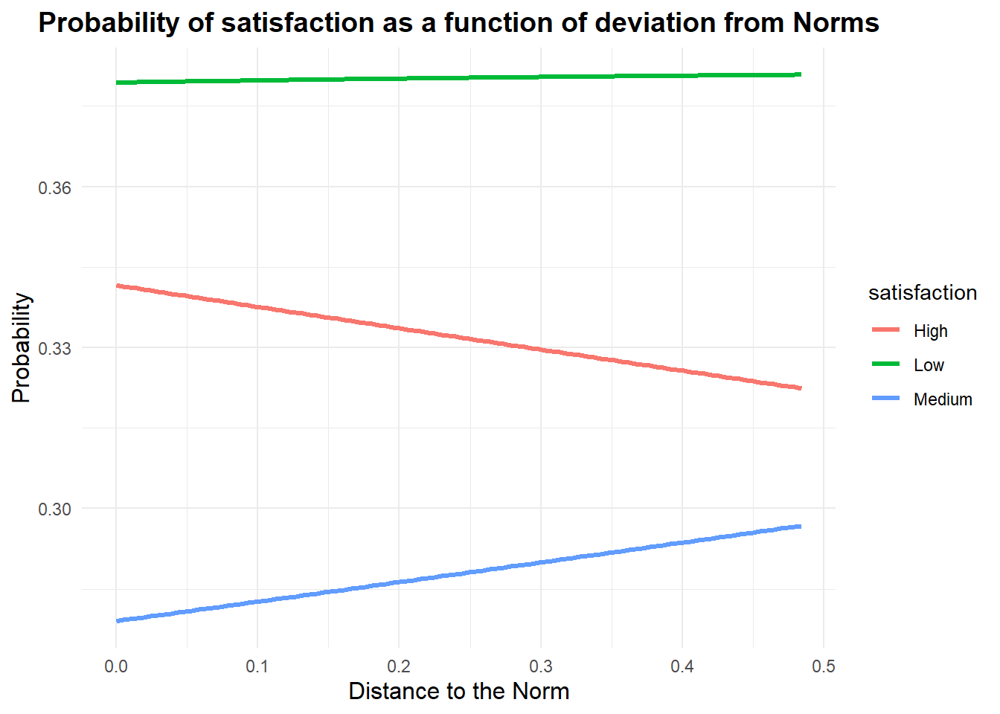
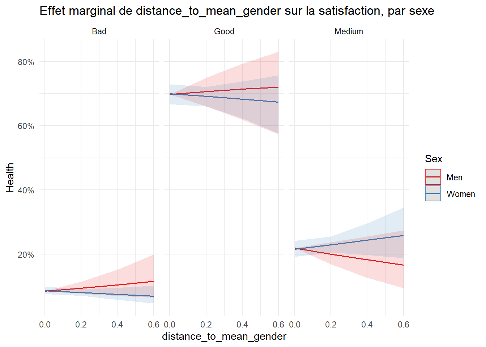

Avec ses cheveux courts, lors de son élection, miss France 2024 a défrayé la chronique.
Au vue des réactions épidermiques, la dunkerquoise Eve Gilles semblait transgresser là une norme de genre instituée.
Avec cet exemple, qui peut sembler trivial, nous souhaitons aborder la question fondamentale de l’identité, et plus spécifiquement, de l’identité de genre.
L’identité peut être définie comme le sentiment que l’on a de soi (“A person’ sense of self”) , c’est une notion multiple, protéiforme, difficile à appréhender et plus encore: à mesurer.
Mais pourquoi les économistes devraient-ils s’intéresser à cette variable identité?
Comment et pourquoi intègrent-ils cette notion dans leurs modèles?
Si la nécessité de proposer des modèles intégrant cette variable nous semble pertinente, vient alors la question de la difficile mesure de ce concept fondamental.
Enfin, quelles répercussions socio-économiques peut-on observer à travers la mise en lien de cette mesure de l’identité et des variables économiques?
L’économie de l’identité est un courant récent de la discipline.
Les travaux fondateurs d’ Akerlof et Kranton (George A. Akerlof and Kranton (2000b) ) ont mis en lumière la nécessité d’intégrer dans les modèles économiques traditionnels cette notion fondamentale qu’est l’identité.
Utilité et Identité
Pour un économiste, le concept d’utilité est central. Il s’agit d’une mesure de la satisfaction individuelle.
Un individu, par exemple un consommateur, réalise ses choix en fonction du niveau de satisfaction qu’il peut retirer. C’est son objectif, modélisé sous forme de fonction.
Dans les modèles traditionnels, l’utilité dépend de quelques variables objectives, qui ont l’intérêt d’être mesurables.
Par exemple, pour un consommateur, \(U=F(x,y)\) , où \(x\) et \(y\) sont les quantités de biens consommées.
L’apport d’Akerlof et Kranton, est d’indiquer que les choix des individus sont influencés par le sentiment qu’ils ont d’eux même, leur identité.
Enrichir les modèles traditionnels de cette nouvelle variable permettrait de mieux comprendre ce qui parfois échappe à la théorie classique.
Modèle avec Identité
Reprenons ici le modèle proposé par Akerlof et Kranton,
la fonction d’utilité d’un individu est la suivante:
\(U_j = U_j(a_j, a_j I_j)\)
où :
\(a_j\) représente les actions de l’individu \(j\)
\(a_j\)\(I_j\) capture les intéractions entre les actions de \(j\) et son identité \(I_j\)
Cette fonction d’identite \(I_j\) dépend elle même de plusieurs facteurs:
\(I_j = I_j(a_j, a_{-j}, c_j, E_j, P)\)
où :
\(a_j\) représente les actions de l’individu \(j\),
\(a_{-j}\) repésente les actions des autres individus,
\(c_j\) est la catégorie sociale à laquelle appartien \(j\),
\(E_j\) sont les caractéristiques données de \(j\),
\(P\) sont les prescriptions (ou normes sociales) associées à la catégorie \(c_j\).
Ce modèle formalise cette tension qui peut exister pour les individus entre se conformer ou non aux normes de sa catégorie sociale assignée, en fonction de la distance qui peut exister entre ses propres caractéristiques et les prescriptions assignées.
Il suppose aussi l’existence possible de sanctions de la part des pairs si les normes ne sont pas suivies (moqueries, mise à l’écart ou même violence)
Par exemple, dans leur papier (George A. Akerlof and Kranton, n.d.) complètent les théories traditionnelles de l’économie de l’éducation en expliquant le plus ou moins grand investissement scolaire des étudiants en fonction de leurs caractéristiques identitaires (les sportifs, les intellos et les rebelles)
Identité et choix des individus
L’économie étudie comment les agents font leur choix (de consommation, de production…), ces choix dépendent de l’identité des individus.
En effet, le sens que l’on a de soi, influence nos décisions, et ces décisions influencent notre identité en retour.
Dans un premier temps, la catégorie sociale à laquelle j’appartiens peut influencer mes préférences (Chen and Li (2009)) ,mes comportements pro-sociaux (Charness, Cobo-Reyes, and Jiménez (2014)) et donc mes décisions.
Dans un second temps, l’individu arbitre entre ses propres caractéristiques et les prescriptions de sa catégorie sociale (ou les prescriptions supposées).
Vais-je me conformer à ce qui est attendu? Mes propres caractéristiques sont-elles plus ou moins proches des normes en vigueur? Si je ne me conforme pas, quelle sera la réaction de mes pairs?
Cet arbitrage et cette possibilité pour autrui de répondre à mes actions a été représenté sous forme d’arbre de décision par George A. Akerlof and Kranton (2000a)
Cette friction entre adhérer ou non aux normes de ma catégorie sociale a conduit la recherche des économistes de l’identité vers les questions de conflits inter-groupes (Austen-Smith and Fryer (2005), Chakravarty et al. (2015), Fryer, Fryer, and Torelli (2010), Bénabou and Tirole (2004).)
On s’interroge sur les normes, l’adhésion ou non à ces dernières et le rôle que peuvent jouer les politiques publiques sur ces prescriptions.
Mais l’identité joue également un rôle fondamental sur les performances individuelles.
Identité et Performances
Dans une étude particulièrement intéressante, Shih, Pittinsky, and Trahan (2006) ont montré comment l’activation d’une identité particulière, ou tout du moins comment les stéréotypes associés à cette identité, pouvaient avoir un impact sur les performances individuelles.
En réalisant une étude auprès d’étudiantes asiatiques aux Etats Unis, les chercheurs ont proposé l’expérience suivante:
Un questionnaire était fourni aux participantes avant de réaliser un test de mathématiques.
Une partie des participantes répondaient à un questionnaire dont les questions portaient sur leur identité asiatique, pour les autres participantes le questionnaire activait leur identité féminine, un groupe de contrôle était également implémanté.
Ce simple questionnaire en préambule a eu des effets notables sur les performances aux tests de mathématiques réalisés ensuite, puisque en moyenne, les étudiantes dont l’identité asiatique avait été mise en évidence performaient significativement mieux aux tests de mathématiques que leurs homologues dont l’identité féminine avait été activée.
Cette étude plaide donc pour la nécessité de s’interroger sur la notion d’identité, dès lors que cette variable peut significativement avoir des répercussions sur les résultats socio-économiques des individus.
Cependant, les critiques apportées à ce nouveau courant sont notamment que ce concept fondamental d’identité est trop flou, comment intégrer dans les modèles ou bien encore dans les études empiriques cette dimension si polymorphe?
La question de la mesure de l’identité se pose alors… ## Construction de l’indice
L’indice que nous proposons repose donc sur la dernière approche présentée:
Un indice de mesure continue de l’identité de genre, construit comme un indice composite à partir de dimensions non définies a priori comme genrées.
Mais alors, quelles variables choisir pour représenter ces dimensions du genre?
Notre choix s’est porté sur les pratiques culturelles des français (leurs loisirs culturels) car ces pratiques sont en effet particulièrement genrées (différenciées selon les sexes biologiques), il nous paraissait pertinent de s’appuyer sur ces dernières pour construire notre indice.
Pratiques culturelles et Genre ?
En sociologie, la question de la culture et du Genre fait l’objet de travaux ayant montré combien les pratiques culturelles sont différenciées chez les hommes et les femmes (Octobre (2008)) , et ce, dès l’enfance.
Cette différenciation nous permet d’envisager qu’il y ait des pratiques plus ou moins féminines ou masculines, dans la mesure où en moyenne elles sont plus pratiquées par des hommes ou par des femmes.
Cela signifie qu’il existe des normes genrées dans la pratique ou non d’une activité culturelle: le tricot est essentiellement féminin, la chasse est une activité plutôt pratiquée par les hommes.
Ces exemples sont tirés de l’analyse de nos données, en effet, nous avons utilisé la base de données Enquête sur les pratiques culturelles des Français, 2018.
Cette base de données comprend des informations sur les pratiques culturelles des français (9234 individus interrogés) , ainsi que des données socio-démographiques et porte également une question qui va nous intéresser sur le degré de satisfaction en termes de temps libre.
Cette dernière variable (“Vous arrive-t-il d’avoir le sentiment de manquer de temps libre pour faire tout ce dont vous avez envie?”) a retenu notre attention car elle pourrait être une mesure de l’utilité (satisfaction) de l’individu.
2 Wilcoxon rank sum test; Pearson’s Chi-squared test with simulated p-value (based on 2000 replicates); Fisher’s Exact Test for Count Data with simulated p-value (based on 2000 replicates)
Lecture: Parmi les individus de sexe masculin, 59% sont en couple. La différence avec les femmes est significative (p<0,001)
Lecture: Parmi les hommes, 1.8% déclarent pratiquer le tricot, contre 27% des femmes. Cette activité est pratiquée par 16% des répondants.
Les p-value <10% indiquent que les différences de participation aux pratiques culturelles sont significativement différentes selon le sexe biologique du répondant.
Note
Nous retiendrons pour la construction de notre indice les pratiques culturelles suivantes:
Afin de construire notre indice d’identité de genre, nous suivons la méthodologie proposée par Cipriani et al. (n.d.) et réalisons une Analyse des Correspondances Multiples (ACM) sur nos variables “pratiques culturelles”.
Encadré Technique 1: Détails de la méthode ACM
L’**ACM** est une extension de l’**Analyse des Correspondances Simples (ACS)** qui permet d’explorer les relations entre plusieurs variables qualitatives en projetant les individus et les modalités dans un espace de faible dimension. Elle est souvent utilisée pour analyser des **questionnaires** et des **tableaux de contingence** complexes.
### Principaux résultats d’une ACM
1. **Inertie totale**
Mesure la dispersion des données et est donnée par :
où \(\lambda_k\) sont les valeurs propres et \(q\) est le nombre total de modalités.
2. **Valeurs propres \(\lambda_k\)**
Elles indiquent la variance expliquée par chaque axe factoriel. Plus une valeur propre est élevée, plus l’axe correspondant est important dans l’analyse.
3. **Rapports de corrélation \(\eta^2\)**
Le **rapport de corrélation** \(\eta^2\) mesure la liaison entre une variable et un axe factoriel :
où $ f_i $ est la fréquence de l’individu/modalité $i $, et $d_{i,k} $ est sa distance à l’axe \(k\) .
4. **Coordonnées des individus et modalités**
Elles sont obtenues à partir des vecteurs propres et permettent la représentation graphique des données :
\(C_{i,k} = \frac{v_{i,k}}{\sqrt{\lambda_k}}\)
où \(v_{i,k}\) est le vecteur propre associé à l’axe \(k\).
5. **Cos² (Qualité de représentation)**
Indique dans quelle mesure un point est bien représenté sur un axe donné. Une valeur proche de **1** signifie que la projection sur cet axe est pertinente.
6. **Contributions **
Elles mesurent l’importance d’une modalité ou d’un individu dans la construction d’un axe. Plus une contribution est élevée, plus l’élément joue un rôle important dans l’interprétation de l’axe.
On remarque que la variable supplémentaire “Sexe” correspond à la dimension 2 de notre ACM. Cette dimension explique 6,06% de la variance totale.
Une analyse plus poussée avec le package Explor nous permet de mesurer l’association de la variable supplémentaire Sexe avec cette dimension (dim2), en effet, l’ \(𝞰^2\) est de 0,14 , ce qui peut sembler peu mais indique bien que notre variable supplémentaire est liée à cet axe.
Pour construire notre indice, nous utiliserons donc les coordonnées des variables pratiques culturelles le long de cet axe 2.
# Extract coordinates for dimension 2coord_dim2_modalites <- acm2_fm$var$coord[, 2]# Create a table associating the modalities and their coordinates in dimension 2modalites_coord <-data.frame(Modalite = modalites_names, Coord_Dim2 = coord_dim2_modalites)# Keep only the two necessary columnsmodalites_coord_selected <- modalites_coord[, c("Modalite", "Coord_Dim2")]print(modalites_coord_selected)
Ce tableau indique les poids utilisés pour la construction de notre indice.
Show the code
# Initialize a vector to store the index of each individualra_data$indice_culturel <-0# Browse each individualfor (i in1:nrow(ra_data)) {# Initialize individual's index to 0 indice_individu <-0# Browse each practice column (columns 3 to 27)for (pratique in3:27) {# Retrieve the individual's response for this practice (0 or 1) reponse <- ra_data[i, pratique]# If the answer is 1, add the coordinate of the corresponding modality to the index.if (reponse ==1) {# Create the modality name (e.g. “knitting_1” or “knitting_0”) nom_modalite_1 <-paste0(names(ra_data)[pratique], "_1") nom_modalite_0 <-paste0(names(ra_data)[pratique], "_0")# Find the coordinate associated with the corresponding modalityif (nom_modalite_1 %in% modalites_coord$Modalite) { indice_individu <- indice_individu + modalites_coord$Coord_Dim2[modalites_coord$Modalite == nom_modalite_1] }if (nom_modalite_0 %in% modalites_coord$Modalite) { indice_individu <- indice_individu + modalites_coord$Coord_Dim2[modalites_coord$Modalite == nom_modalite_0] } } }# Assign the calculated index to the individual ra_data$indice_culturel[i] <- indice_individu}####Normalisation# Calculate minimum and maximum index valuesmin_indice <-min(ra_data$indice_culturel, na.rm =TRUE)max_indice <-max(ra_data$indice_culturel, na.rm =TRUE)# Normalize indexra_data$indice_culturel_normalise <- (ra_data$indice_culturel - min_indice) / (max_indice - min_indice)# Check resultshead(ra_data[, c("indice_culturel", "indice_culturel_normalise")])
Notre indice est donc construit de la façon suivante:
\[I_{1j} = \sum_{k=1}^{Z} w_{1k} \cdot X_{k j}\]
Dans cette expression, \(I_{1j}\) désigne l’indice de l’individu \(j\), tandis que \(w_{1k}\) représente le poids associé à chaque variable culturelle \(X_{kj}\). La somme englobe toutes les variables culturelles \(Z\), ce qui nous permet de saisir l’engagement culturel global de l’individu.
Description de l’indice
Show the code
my_data_frame$identity<-ra_data$indice_culturel_normalisemy_data_frame$indice<-ra_data$indice_culturelggplot(my_data_frame, aes(x = identity, fill = Sex)) +geom_density(alpha =0.5) +scale_fill_manual(values =c("blue", "pink")) +labs(title ="Density of The Normalized Cultural Index by Sexe",x ="Normalized Cultural Index",y ="Density",fill ="Sexe") +theme_minimal()
L’indice normalisé est compris entre 0 et 1. Plus il est proche de zéro plus les individus sont proches de la norme féminine (en termes de pratiques culturelles).
L’indice est significativement différent selon le sexe biologique des interrogés.
Show the code
reg<-lm(identity~Sex, my_data_frame)summary(reg)
Call:
lm(formula = identity ~ Sex, data = my_data_frame)
Residuals:
Min 1Q Median 3Q Max
-0.41933 -0.07875 -0.01093 0.06694 0.58782
Coefficients:
Estimate Std. Error t value Pr(>|t|)
(Intercept) 0.424436 0.001815 233.79 <2e-16 ***
SexWomen -0.099669 0.002450 -40.69 <2e-16 ***
---
Signif. codes: 0 '***' 0.001 '**' 0.01 '*' 0.05 '.' 0.1 ' ' 1
Residual standard error: 0.1171 on 9232 degrees of freedom
Multiple R-squared: 0.1521, Adjusted R-squared: 0.152
F-statistic: 1656 on 1 and 9232 DF, p-value: < 2.2e-16
Le sexe biologique est très significatif, les valeurs plus faibles de l’indice sont associées au sexe féminin.
Robustesse
Show the code
data$identity<- my_data_frame$identitymy_data_frame$identity<-data$identity# List of cultural activitiescultural_activities <-c("Knitting" , "Cards_games", "Gambling" , "Cooking" , "DIY" ,"Vegetable_garden" , "Fishing_hunting" , "Collection" ,"Vehicle_custom","Making_music" ,"Diary" ,"Writing" , "Painting", "Montage" , "Pottery" , "Theater" , "Drawing" , "Dancing", "Photography" ,"Genealogy" , "Science" ,"None" ,"Video_games" ,"Library" ,"Concert")# Create a data frame to store the resultsresult_table <-data.frame(Activity =character(0), Accuracy =numeric(0))for (activity in cultural_activities) {# Perform a Probit regression for the current cultural activity model_formula <-as.formula(paste(activity, "~ identity")) model <-glm(model_formula, data = my_data_frame, family =binomial(link ="probit"))# Calculate predictions predicted <-ifelse(predict(model, type ="response") >=0.5, 1, 0)# Calculate the accuracy correct_predictions <-sum(predicted == my_data_frame[[activity]]) total_predictions <-nrow(my_data_frame) accuracy <- (correct_predictions / total_predictions) *100# Add the result to the data frame result_table <-rbind(result_table, data.frame(Activity = activity, Accuracy = accuracy))}result_table
Nous réalisons une série de régressions Probit sur les différentes pratiques culturelles, avec pour unique régresseur notre indice d’identité, afin de mesurer le pouvoir prédictif (ou accuracy) de ce dernier.
Comparaisons avec d’autres mesures ?
Comparons l’indice obtenu avec d’autres mesures, et plus particulièrement avec les indices échelle d’identité.
Pour cela, nous allons diviser notre indice en 7 catégories, allant du plus féminin au plus masculin.
Ce tableau est à mettre en perspective avec les données de Trachman (2022a).
Tout d’abord non remarquons que, comme dans l’enquête de Trachman (2022a), les individus “hors norme” sont peu nombreux (d’après notre indice, moins de 0,1% des femmes ont des pratiques culturelles très masculines; 0,2% des hommes ont des pratiques très féminines) , de même que les individus dont les pratiques culturelles seraient complètement conformes à leur sexe biologique ne sont pas la majorité (4,3% des femmes sont classées comme très féminines, 0,5% des hommes comme très masculins.)
Cela plaide encore une fois pour l’intérêt d’une mesure continue.
Nous allons ensuite explorer plus en détails les variables socio-démographiques qui peuvent influencer notre indice (revenu, âge, catégorie socio-professionnelle …)
Variables socio-économiques et identité de genre
Dans cette partie, nous allons analyser les implications socio-économiques de l’identité de genre.
Pour commencer, nous allons regarder les différents profils des individus selon leur indice d’identité.
Puis nous analyserons les liens entre distance à la norme et l’utilité des individus (leur degré de satisfaction.)
2 Pearson’s Chi-squared test with simulated p-value (based on 2000 replicates); Fisher’s Exact Test for Count Data with simulated p-value (based on 2000 replicates)
Lecture: Parmi les individus catégorisés comme très féminins selon notre indice, 44% ont des revenus élevés. Les variables étudiées sont significativement différentes selon les degrés d’identité.
Il semble, d’après cette première table descriptive, que l’âge, les niveaux de revenus ainsi que les professions (CLASSIF) jouent un rôle dans l’identité de genre. Tout comme dans l’étude de Trachman (2022b), les facteurs socio-économiques influencent les variations du genre.
CLASSIF
1
Manoeuvre ou ouvrier spécialisé
2
Ouvrier qualifié ou hautement qualifié/ technicien(ne) d’atelier
3
Technicien(ne)
4
Agent de maîtrise, maîtrise administrative ou commerciale, VRP (non cadre)
5
Ingénieur, Cadre
6
Employé(e) de bureau, Employé(e) de commerce, Personnel de services
7
Directeur général, Adjoint direct
8
NSP
9
REF
On peut regarder si les effets sont différents selon le sexe biologique:
2 Fisher’s Exact Test for Count Data with simulated p-value (based on 2000 replicates)
Lecture: Parmi les hommes classés comme très féminins, 27% appartiennent à la catégorie socio-professionnelle 5 (ingénieur, cadre)
Distance à la norme
Nous l’évoquions au début de ce document, ce qui nous intéresse en proposant une mesure continue des variations du genre c’est de pouvoir analyser les distances prises avec les normes de son groupe de référence.
Pour cela, nous allons construire la variable “Distance à la norme”
Show the code
mean_gender <-tapply(my_data_frame$identity, my_data_frame$Sex, mean)sd_gender <-tapply(my_data_frame$identity, my_data_frame$Sex, sd)my_data_frame$distance<- (my_data_frame$identity - mean_gender[my_data_frame$Sex]) / sd_gender[my_data_frame$Sex]ggplot(my_data_frame, aes(x = distance, color = Sex, fill = Sex)) +geom_density(alpha =0.4) +labs(title ="Density of Distance to the Norm, by Sex", x ="Distance to the Norm (Z-score)", y ="Density") +scale_fill_manual(values =c("blue", "pink")) +scale_color_manual(values =c("blue", "pink")) +theme_minimal()
Show the code
#Ou en valeur absolue: mean_gender <-tapply(my_data_frame$identity, my_data_frame$Sex, mean)sd_gender <-tapply(my_data_frame$identity, my_data_frame$Sex, sd)my_data_frame$distance_abs<-abs((my_data_frame$identity - mean_gender[my_data_frame$Sex]) / sd_gender[my_data_frame$Sex])ggplot(my_data_frame, aes(x = distance_abs, color = Sex, fill = Sex)) +geom_density(alpha =0.4) +labs(title ="Density of Distance to the Norm, by Sex", x ="Distance to the Norm (Z-score)", y ="Density") +scale_fill_manual(values =c("blue", "pink")) +scale_color_manual(values =c("blue", "pink")) +theme_minimal()
library(MASS)my_data_frame$satisfaction<-as.factor((my_data_frame$satisfaction))# Ordinal logistic regression model fittingordinal_model <-polr(satisfaction ~ distance, data = my_data_frame, Hess =TRUE)# 1. Predict the probabilities for each categorydistance_vals <-seq(min(my_data_frame$distance), max(my_data_frame$distance))new_data <-data.frame(distance = distance_vals)predicted_probs <-predict(ordinal_model, newdata = new_data, type ="probs")# 3. Convert results to dataframepredicted_probs_df <-as.data.frame(predicted_probs)predicted_probs_df$distance <- distance_vals# 4. Transform data into long format for ggplot2predicted_probs_long <-pivot_longer(predicted_probs_df, cols =-distance, names_to ="satisfaction", values_to ="probabilite")# 5. Visualize predicted probabilitiesggplot(predicted_probs_long, aes(x = distance, y = probabilite, color = satisfaction)) +geom_line(size =1.2) +labs(title ="Probability of satisfaction as a function of deviation from Norms",x ="Distance to the Norm",y ="Probability") +theme_minimal() +theme(plot.title =element_text(hjust =0.5, size =14, face ="bold"),axis.title.x =element_text(size =12),axis.title.y =element_text(size =12) )
La satisfaction est mesurée comme étant la réponse à la question “Vous arrive-t-il d’avoir le sentiment de manquer de temps libre pour faire tout ce dont vous avez envie ?”
Ce graphique semble indiquer que la satisfaction en termes de temps libre croît avec la distance à sa norme de genre.
Cet effet est-il vérifié pour les différents niveaux de revenus et le sexe biologique?
Show the code
# Graph with only lines and no scatter pointsggplot(my_data_frame, aes(x = distance, y =as.numeric(satisfaction), color =as.factor(Income))) +geom_smooth(method ="lm", aes(linetype =as.factor(Income)), se =FALSE) +# Regression curves without confidence intervals and different line types # Gray scale palettescale_linetype_manual(values =c("Low"="solid", "Medium"="dashed", "High"="twodash")) +# Line types: solid, dashed, and twodash for the 3rdlabs(title ="Interaction between Distance to the Norm and Income Groups",x ="Distance to the Norm (z-score)",y ="Satisfaction (ordinal)",color ="Income (grouped)",linetype ="Line Type" ) +theme_minimal() +# Minimalist themetheme(text =element_text(size =12), # Text sizepanel.grid =element_blank(), # Remove gridlinespanel.border =element_blank(), # Remove borders around the plotplot.background =element_blank(), # Remove gray backgroundlegend.position ="top", # Place legend at the topaxis.title =element_text(color ="black"), # Axis titles in blackaxis.text =element_text(color ="black") # Axis text in black )
L’effet semble s’inverser pour les bas revenus, s’écarter de la norme s’accompagne d’une baisse de la satisfaction ressentie.
# Fit ordinal logistic regression model including SEXordinal_model2 <-polr(satisfaction ~ distance * Sex, data = my_data_frame, Hess =TRUE)# Create a sequence of values for conformityconformity_vals <-seq(min(my_data_frame$distance), max(my_data_frame$distance))# Create a new dataset with all combinations of conformity and SEXnew_data <-expand.grid(distance = distance_vals, Sex =c("Men", "Women"))# Predict probabilities for each combination of conformity and SEXEpredicted_probs <-predict(ordinal_model2, newdata = new_data, type ="probs")# Convert results to dataframepredicted_probs_df <-as.data.frame(predicted_probs)predicted_probs_df$distance <- new_data$distancepredicted_probs_df$Sex <- new_data$Sex# Correctly name probability columns for satisfaction levels 1, 2 and 3colnames(predicted_probs_df)[1:3] <-c("satisfaction_1", "satisfaction_2", "satisfaction_3")# Transformation to long format for easier viewing with ggplot2predicted_probs_long <-pivot_longer(predicted_probs_df, cols =starts_with("satisfaction"), # Selects columns satisfaction_1, 2 and 3names_to ="satisfaction", values_to ="probabilite")# Modify names for simple labelspredicted_probs_long$satisfaction <-factor(predicted_probs_long$satisfaction, levels =c("satisfaction_1", "satisfaction_2", "satisfaction_3"),labels =c("Low", "Medium", "High"))# Visualize predicted probabilities for each genderggplot(predicted_probs_long, aes(x = distance, y = probabilite, color = satisfaction, linetype = Sex)) +geom_line(size =1.2) +labs(title ="Predicted Probabilities of Satisfaction Based on Distance to the Norm",x ="Distance to the Norm",y ="Probability") +scale_color_manual(values =c("#87CEEB", "#4682B4", "#1E90FF")) +# scale_linetype_manual(values =c("solid", "dashed")) +# Differentiates between men and womentheme_minimal() +theme(plot.title =element_text(hjust =0.5, size =14, face ="bold"),axis.title.x =element_text(size =12),axis.title.y =element_text(size =12) )
Ce graphique montre des différences significatives entre hommes et femmes, chez les femmes l’éloignement aux normes semble augmenter l’insatisfaction, cet effet n’est pas aussi net chez les hommes.
# Préparer X_test (même traitement que pour l'entraînement)x_test <-model.matrix(SEXE ~ Knitting + Cards_games + Gambling + Cooking + DIY + Vegetable_garden + Ornamental_garden + Fishing_hunting + Collection + Vehicle_custom + Making_music + Diary + Writing + Painting + Montage + Circus + Pottery + Theater + Drawing + Dancing + Photography + Genealogy + Science + None + No_Amateur + Video_games + TV + Radio + Library + Museums + Internet + Concert, test_data)[, -1]# Prédire les probabilités sur les données de test avec le meilleur lambdapreds <-predict(cv_lasso, newx = x_test, s ="lambda.min", type ="response")# Variable cible y_test pour l'ensemble de testy_test <- test_data$SEXE# Calcul de l'AUC avec pROCroc_curve <-roc(y_test, preds)auc_value <-auc(roc_curve)print(paste("AUC:", auc_value))
[1] "AUC: 0.863648296764279"
Show the code
# Calculer la courbe ROCroc_curve <-roc(y_test, preds)# Afficher la courbe ROCplot(roc_curve, main ="Courbe ROC", col ="blue", lwd =2)# Optionnel : Ajouter la ligne de base (diagonale)abline(a =0, b =1, col ="red", lty =2)
Show the code
# Afficher les coefficients pour le meilleur lambdacoefficients <-coef(cv_lasso, s ="lambda.min")# Convertir en data.frame pour une meilleure lisibilitécoefficients_df <-as.data.frame(as.matrix(coefficients))colnames(coefficients_df) <-"Coefficient"coefficients_df$Variable <-rownames(coefficients_df)# Filtrer pour ne garder que les variables avec des coefficients non nulscoefficients_non_zero <- coefficients_df[coefficients_df$Coefficient !=0, ]# Afficher les variables gardées et leurs coefficientsprint(coefficients_non_zero)
# Exclure "(Intercept)" des coefficientscoefficients_filtered <- coefficients_non_zero[coefficients_non_zero$Variable !="(Intercept)", ]# Aligner les coefficients sur x_testcoef_vector <- coefficients_filtered$Coefficient[match(colnames(x_test), coefficients_filtered$Variable)]# Calcul des scorestest_data$score <- x_test %*% coef_vector# Normalisation des scoresmin_score <-min(test_data$score, na.rm =TRUE)max_score <-max(test_data$score, na.rm =TRUE)if (max_score > min_score) { test_data$score_normalise <- (test_data$score - min_score) / (max_score - min_score)} else { test_data$score_normalise <-0}# Visualisation avec ggplot2library(ggplot2)ggplot(test_data, aes(x = score_normalise, color = SEXE, fill = SEXE)) +geom_density(alpha =0.4) +labs(title ="Densité du Score Normalisé", x ="Score Normalisé", y ="Densité") +scale_fill_manual(values =c("blue", "pink")) +scale_color_manual(values =c("blue", "pink")) +theme_minimal()
Show the code
# Préparer la matrice X pour l'ensemble complet (train + test)x_full <-model.matrix(SEXE ~ Knitting + Cards_games + Gambling + Cooking + DIY + Vegetable_garden + Ornamental_garden + Fishing_hunting + Collection + Vehicle_custom + Making_music + Diary + Writing + Painting + Montage + Circus + Pottery + Theater + Drawing + Dancing + Photography + Genealogy + Science + None + No_Amateur + Video_games + TV + Radio + Library + Museums + Internet + Concert, my_data_frame)[, -1] # Exclure l'intercept# Sélectionner les variables pertinentes (identiques à celles du modèle LASSO)matched_vars <-intersect(rownames(coefficients_non_zero), colnames(x_full))x_full <- x_full[, matched_vars, drop =FALSE] # Garder uniquement les variables sélectionnées# Aligner les coefficients sur x_fullcoef_vector_full <- coefficients_filtered$Coefficient[match(colnames(x_full), coefficients_filtered$Variable)]# Calcul des scores pour l'ensemble completmy_data_frame$score <- x_full %*% coef_vector_full# Normalisation des scoresmin_score_full <-min(my_data_frame$score, na.rm =TRUE)max_score_full <-max(my_data_frame$score, na.rm =TRUE)if (max_score_full > min_score_full) { my_data_frame$score_normalise <- (my_data_frame$score - min_score_full) / (max_score_full - min_score_full)} else { my_data_frame$score_normalise <-0}# Visualisation du score normalisé pour l'ensemble complet avec ggplot2library(ggplot2)ggplot(my_data_frame, aes(x = score_normalise, color = SEXE, fill = SEXE)) +geom_density(alpha =0.4) +labs(title ="Densité du Score Normalisé (Ensemble Complet)", x ="Score Normalisé", y ="Densité") +scale_fill_manual(values =c("blue", "pink")) +scale_color_manual(values =c("blue", "pink")) +theme_minimal()
Show the code
# Calculer la corrélation entre indice_normalise et score_normalisecorrelation_value <-cor(my_data_frame$identity, my_data_frame$score_normalise, use ="complete.obs")print(paste("Corrélation entre indice_normalise et score_normalise :", correlation_value))
[1] "Corrélation entre indice_normalise et score_normalise : -0.633301769932013"
Show the code
# Visualiser la relation entre indice_normalise et score_normaliselibrary(ggplot2)ggplot(my_data_frame, aes(x = identity, y = score_normalise)) +geom_point(alpha =0.5) +labs(title ="Relation entre indice_normalise et score_normalise", x ="Indice Normalisé", y ="Score Normalisé") +theme_minimal() +geom_smooth(method ="lm", col ="red", se =FALSE) # Ajouter une droite de régression linéaire
Show the code
# Create a data frame to store the resultsresult_table_score <-data.frame(Activity =character(0), Accuracy =numeric(0))for (activity in cultural_activities) {# Perform a Probit regression for the current cultural activity model_formula <-as.formula(paste(activity, "~ score_normalise")) model <-glm(model_formula, data = my_data_frame, family =binomial(link ="probit"))# Calculate predictions predicted <-ifelse(predict(model, type ="response") >=0.5, 1, 0)# Calculate the accuracy correct_predictions <-sum(predicted == my_data_frame[[activity]]) total_predictions <-nrow(my_data_frame) accuracy <- (correct_predictions / total_predictions) *100# Add the result to the data frame result_table_score <-rbind(result_table, data.frame(Activity = activity, Accuracy = accuracy))}result_table_score
La majorité des femmes se disent plutôt féminines et la majorité des hommes plutôt masculins. Ceci suggère un sentiment de “normalité” du point de vue du genre
Cependant, l’intensité de ces positionnements diffère selon le sexe. Un tiers des hommes se disent très masculins, tandis que moins d’un quart des femmes se disent très féminines
De plus, un peu plus de 9 % des femmes se considèrent « pas très féminines », contre seulement 2 % des hommes qui se disent « pas très masculins »
Score-Distance à la norme
Show the code
# Calculer la moyenne des scores normalisés pour chaque genremean_scores_by_gender <- my_data_frame %>%group_by(SEXE) %>%summarise(mean_score_by_gender =mean(score_normalise, na.rm =TRUE))# Afficher les moyennes par genreprint(mean_scores_by_gender)
# Fusionner les données avec la moyenne par genremy_data_frame <- my_data_frame %>%left_join(mean_scores_by_gender, by ="SEXE")# Calculer la distance entre le score normalisé de chaque individu et la moyenne de son genremy_data_frame$distance_to_mean_gender <-abs(my_data_frame$score_normalise - my_data_frame$mean_score_by_gender)ggplot(my_data_frame, aes(x = distance_to_mean_gender, color = Sex, fill = Sex)) +geom_density(alpha =0.4) +labs(title ="Density of Distance to the Norm, by Sex", x ="Distance to the Norm (Z-score)", y ="Density") +scale_fill_manual(values =c("blue", "pink")) +scale_color_manual(values =c("blue", "pink")) +theme_minimal()
Show the code
library(MASS)library(tidyr)library(ggplot2)# Assurez-vous que 'distance_to_mean_gender' est bien numériquemy_data_frame$distance_to_mean_gender <-as.numeric(my_data_frame$distance_to_mean_gender)# Vérification du type de la variableprint(paste("Type de distance_to_mean_gender :", class(my_data_frame$distance_to_mean_gender)))
[1] "Type de distance_to_mean_gender : numeric"
Show the code
# Ordinal logistic regression model fittingmy_data_frame$satisfaction <-as.factor(my_data_frame$satisfaction) # Assurez-vous que satisfaction est bien un facteur ordinal# Ajuster le modèleordinal_model <-polr(satisfaction ~ distance_to_mean_gender, data = my_data_frame, Hess =TRUE)# 1. Créer les valeurs de distance pour la prédictiondistance_vals <-seq(min(my_data_frame$distance_to_mean_gender, na.rm =TRUE), max(my_data_frame$distance_to_mean_gender, na.rm =TRUE), length.out =100)# 2. Créer un nouveau data frame pour les prédictionsnew_data <-data.frame(distance_to_mean_gender = distance_vals)# 3. Prédire les probabilités pour chaque catégoriepredicted_probs <-predict(ordinal_model, newdata = new_data, type ="probs")# 4. Convertir les résultats en data framepredicted_probs_df <-as.data.frame(predicted_probs)predicted_probs_df$distance_to_mean_gender <- distance_vals# 5. Transformer les données en format long pour ggplot2predicted_probs_long <-pivot_longer(predicted_probs_df, cols =-distance_to_mean_gender, names_to ="satisfaction", values_to ="probabilite")# 6. Visualiser les probabilités préditesggplot(predicted_probs_long, aes(x = distance_to_mean_gender, y = probabilite, color = satisfaction)) +geom_line(size =1.2) +labs(title ="Probability of satisfaction as a function of deviation from Norms",x ="Distance to the Norm",y ="Probability") +theme_minimal() +theme(plot.title =element_text(hjust =0.5, size =14, face ="bold"),axis.title.x =element_text(size =12),axis.title.y =element_text(size =12) )

LASSO 2
Show the code
n_2 <-nrow(my_data_frame)# Indices pour la division (2/3 pour l'entraînement, 1/3 pour le test)train_index <-sample(1:n_2, size =2* n_2 /3) # 2/3 des indices pour l'entraînement# Créer l'ensemble d'entraînement et l'ensemble de testtrain_data <- my_data_frame[train_index, ] # Enregistrement d'entraînementtest_data <- my_data_frame[-train_index, ] # Enregistrement de test# Vérifier les taillescat("Nombre d'observations dans l'ensemble d'entraînement :", nrow(train_data), "\n")
Nombre d'observations dans l'ensemble d'entraînement : 6156
Show the code
cat("Nombre d'observations dans l'ensemble de test :", nrow(test_data), "\n")
Nombre d'observations dans l'ensemble de test : 3078
Show the code
# Charger les bibliothèques nécessaireslibrary(glmnet)library(pROC)# Définir la matrice X pour l'entraînementx_2 <-model.matrix(SEXE ~ Knitting + Cards_games + Gambling + Cooking + DIY + Vegetable_garden + Fishing_hunting + Collection + Vehicle_custom + Making_music + Diary + Writing + Painting + Montage + Pottery + Theater + Drawing + Dancing + Photography + Genealogy + Science + None + Video_games + Library + Concert, train_data)[, -1]# Variable cible y pour l'entraînementy_2 <- train_data$SEXE# Ajuster le modèle LASSO avec validation croiséecv_lasso_2 <-cv.glmnet(x_2, y_2, alpha =1, family ="binomial")best_lambda_2 <- cv_lasso_2$lambda.min # Lambda optimal# Vérifie les coefficients pour le lambda optimalprint(coef(cv_lasso_2, s ="lambda.min"))
# Préparer X_test (même traitement que pour l'entraînement)x_test_2 <-model.matrix(SEXE ~ Knitting + Cards_games + Gambling + Cooking + DIY + Vegetable_garden + Fishing_hunting + Collection + Vehicle_custom + Making_music + Diary + Writing + Painting + Montage + Pottery + Theater + Drawing + Dancing + Photography + Genealogy + Science + None + Video_games + Library + Concert, test_data)[, -1]# Prédire les probabilités sur les données de test avec le meilleur lambdapreds_2 <-predict(cv_lasso_2, newx = x_test_2, s ="lambda.min", type ="response")# Variable cible y_test pour l'ensemble de testy_test_2 <- test_data$SEXE# Calcul de l'AUC avec pROCroc_curve_2 <-roc(y_test_2, preds_2)auc_value_2 <-auc(roc_curve_2)print(paste("AUC:", auc_value_2))
[1] "AUC: 0.859553317223724"
Show the code
# Calculer la courbe ROCroc_curve_2 <-roc(y_test_2, preds_2)# Afficher la courbe ROCplot(roc_curve_2, main ="Courbe ROC 2", col ="blue", lwd =2)# Optionnel : Ajouter la ligne de base (diagonale)abline(a =0, b =1, col ="red", lty =2)
Show the code
# Afficher les coefficients pour le meilleur lambdacoefficients_2 <-coef(cv_lasso_2, s ="lambda.min")# Convertir en data.frame pour une meilleure lisibilitécoefficients_df_2 <-as.data.frame(as.matrix(coefficients_2))colnames(coefficients_df_2) <-"Coefficient"coefficients_df_2$Variable <-rownames(coefficients_df_2)# Filtrer pour ne garder que les variables avec des coefficients non nulscoefficients_non_zero_2 <- coefficients_df_2[coefficients_df_2$Coefficient !=0, ]# Afficher les variables gardées et leurs coefficientsprint(coefficients_non_zero_2)
###CREATION INDICE# Récupérer les coefficients du modèle pour le meilleur lambdacoefficients_2 <-coef(cv_lasso_2, s ="lambda.min")# Convertir en data.frame et filtrer les variables non nullescoefficients_df_2 <-as.data.frame(as.matrix(coefficients_2))colnames(coefficients_df_2) <-"Coefficient"coefficients_df_2$Variable <-rownames(coefficients_df_2)coefficients_non_zero_2 <- coefficients_df_2[coefficients_df_2$Coefficient !=0, ]# Préparer la matrice X des pratiques pour l'ensemble de test (ou d'entraînement si nécessaire)x_test_2 <-model.matrix(SEXE ~ Knitting + Cards_games + Gambling + Cooking + DIY + Vegetable_garden + Fishing_hunting + Collection + Vehicle_custom + Making_music + Diary + Writing + Painting + Montage + Pottery + Theater + Drawing + Dancing + Photography + Genealogy + Science + None + Video_games + Library + Concert, test_data)[, -1] # Assurez-vous d'enlever l'intercept avec [, -1]# Sélectionner les variables pertinentesmatched_vars_2 <-intersect(rownames(coefficients_non_zero_2), colnames(x_test_2))x_test_2 <- x_test_2[, matched_vars_2, drop =FALSE]coef_vector_2 <- coefficients_non_zero_2$Coefficient[matched_vars_2] # Associer les coefficients#print(paste("Dimension de x_test :", dim(x_test)[1], "x", dim(x_test)[2]))#print(paste("Longueur de coef_vector :", length(coef_vector)))#print(paste("Nombre de valeurs NA dans x_test :", sum(is.na(x_test))))#print(paste("Nombre de valeurs NA dans coef_vector :", sum(is.na(coef_vector))))#print("Variables dans coefficients_non_zero :")#print(coefficients_non_zero$Variable)#print("Colonnes de x_test :")#print(colnames(x_test))# Exclure "(Intercept)" des coefficientscoefficients_filtered_2 <- coefficients_non_zero_2[coefficients_non_zero_2$Variable !="(Intercept)", ]# Aligner les coefficients sur x_testcoef_vector_2 <- coefficients_filtered_2$Coefficient[match(colnames(x_test_2), coefficients_filtered_2$Variable)]# Calcul des scorestest_data$score_2 <- x_test_2 %*% coef_vector_2# Normalisation des scoresmin_score_2 <-min(test_data$score_2, na.rm =TRUE)max_score_2 <-max(test_data$score_2, na.rm =TRUE)if (max_score_2 > min_score_2) { test_data$score_normalise_2 <- (test_data$score_2 - min_score_2) / (max_score_2 - min_score_2)} else { test_data$score_normalise_2 <-0}# Visualisation avec ggplot2library(ggplot2)ggplot(test_data, aes(x = score_normalise_2, color = SEXE, fill = SEXE)) +geom_density(alpha =0.4) +labs(title ="Densité du Score Normalisé 2", x ="Score Normalisé 2", y ="Densité") +scale_fill_manual(values =c("blue", "pink")) +scale_color_manual(values =c("blue", "pink")) +theme_minimal()
Show the code
# Préparer la matrice X pour l'ensemble complet (train + test)x_full_2 <-model.matrix(SEXE ~ Knitting + Cards_games + Gambling + Cooking + DIY + Vegetable_garden + Fishing_hunting + Collection + Vehicle_custom + Making_music + Diary + Writing + Painting + Montage + Pottery + Theater + Drawing + Dancing + Photography + Genealogy + Science + None + Video_games + Library + Concert, my_data_frame)[, -1] # Exclure l'intercept# Sélectionner les variables pertinentes (identiques à celles du modèle LASSO)matched_vars_2 <-intersect(rownames(coefficients_non_zero_2), colnames(x_full_2))x_full_2 <- x_full_2[, matched_vars_2, drop =FALSE] # Garder uniquement les variables sélectionnées# Aligner les coefficients sur x_fullcoef_vector_full_2 <- coefficients_filtered_2$Coefficient[match(colnames(x_full_2), coefficients_filtered_2$Variable)]# Calcul des scores pour l'ensemble completmy_data_frame$score_2 <- x_full_2 %*% coef_vector_full_2# Normalisation des scoresmin_score_full_2 <-min(my_data_frame$score_2, na.rm =TRUE)max_score_full_2 <-max(my_data_frame$score_2, na.rm =TRUE)if (max_score_full_2 > min_score_full_2) { my_data_frame$score_normalise_2 <- (my_data_frame$score_2 - min_score_full_2) / (max_score_full_2 - min_score_full_2)} else { my_data_frame$score_normalise_2 <-0}# Visualisation du score normalisé pour l'ensemble complet avec ggplot2library(ggplot2)ggplot(my_data_frame, aes(x = score_normalise_2, color = SEXE, fill = SEXE)) +geom_density(alpha =0.4) +labs(title ="Densité du Score Normalisé 2(Ensemble Complet)", x ="Score Normalisé", y ="Densité") +scale_fill_manual(values =c("blue", "pink")) +scale_color_manual(values =c("blue", "pink")) +theme_minimal()
Show the code
# Calculer la corrélation entre indice_normalise et score_normalisecorrelation_value_2 <-cor(my_data_frame$identity, my_data_frame$score_normalise_2, use ="complete.obs")print(paste("Corrélation entre indice_normalise et score_normalise 2:", correlation_value))
[1] "Corrélation entre indice_normalise et score_normalise 2: -0.633301769932013"
Show the code
# Visualiser la relation entre indice_normalise et score_normaliselibrary(ggplot2)ggplot(my_data_frame, aes(x = identity, y = score_normalise_2)) +geom_point(alpha =0.5) +labs(title ="Relation entre indice_normalise et score_normalise 2", x ="Indice Normalisé", y ="Score Normalisé") +theme_minimal() +geom_smooth(method ="lm", col ="red", se =FALSE) # Ajouter une droite de régression linéaire
Show the code
# Créer un data frame pour stocker les résultatsresult_table_score_2 <-data.frame(Activity_2 =character(0), Accuracy_2 =numeric(0))cultural_activities_2 <-c("Knitting", "Cards_games", "Gambling", "Cooking", "DIY","Vegetable_garden", "Fishing_hunting", "Collection", "Vehicle_custom","Making_music", "Diary", "Writing", "Painting", "Montage","Pottery", "Theater", "Drawing", "Dancing", "Photography","Genealogy", "Science", "None", "Video_games", "Library", "Concert")for (activity_2 in cultural_activities_2) {# Effectuer une régression Probit pour l'activité culturelle actuelle model_formula_2 <-as.formula(paste(activity_2, "~ score_normalise_2")) model_2 <-glm(model_formula_2, data = my_data_frame, family =binomial(link ="probit"))# Calculer les prédictions predicted_2 <-ifelse(predict(model_2, type ="response") >=0.5, 1, 0)# Calculer la précision correct_predictions_2 <-sum(predicted_2 == my_data_frame[[activity_2]]) total_predictions_2 <-nrow(my_data_frame) accuracy_2 <- (correct_predictions_2 / total_predictions_2) *100# Ajouter le résultat au data frame result_table_score_2 <-rbind(result_table_score_2, data.frame(Activity_2 = activity_2, Accuracy_2 = accuracy_2))}# Afficher le tableau des résultatsprint(result_table_score_2)
options(repos =c(CRAN ="https://cran.rstudio.com/"))# Charger les bibliothèqueslibrary(MASS)library(ggplot2)library(tidyr)library(ggeffects)# Vérifier et convertir la variable dépendante en facteur ordonnémy_data_frame$satisfaction <-as.ordered(my_data_frame$satisfaction)# Ajuster le modèle avec la méthode logistiquemodel_ordinal <-polr(satisfaction ~ distance_to_mean_gender, data = my_data_frame, method ="logistic")# Résumé du modèlesummary(model_ordinal)
Call:
polr(formula = satisfaction ~ distance_to_mean_gender, data = my_data_frame,
method = "logistic")
Coefficients:
Value Std. Error t value
distance_to_mean_gender 0.1791 0.2734 0.6551
Intercepts:
Value Std. Error t value
High|Low -0.6561 0.0336 -19.5232
Low|Medium 0.9494 0.0344 27.5653
Residual Deviance: 20135.61
AIC: 20141.61
(9 observations effacées parce que manquantes)
Show the code
library(lmtest)# Calculer les p-valuescoeftest(model_ordinal)
t test of coefficients:
Estimate Std. Error t value Pr(>|t|)
distance_to_mean_gender 0.17910 0.27341 0.6551 0.5124
Show the code
# Calculer les odds ratiosexp(coef(model_ordinal))
distance_to_mean_gender
1.196142
Show the code
# Générer une séquence de valeurs pour distance_to_mean_gender_2new_data <-data.frame(distance_to_mean_gender =seq(min(my_data_frame$distance_to_mean_gender, na.rm =TRUE),max(my_data_frame$distance_to_mean_gender, na.rm =TRUE),length.out =100))# Vérifier que les types sont correctsstr(new_data)
'data.frame': 100 obs. of 1 variable:
$ distance_to_mean_gender: num 2.12e-05 4.91e-03 9.80e-03 1.47e-02 1.96e-02 ...
Show the code
# Prédictions des probabilitéspred_probs <-predict(model_ordinal, newdata = new_data, type ="probs")# Transformer les probabilités en data.framepred_probs_df <-as.data.frame(pred_probs)# Ajouter la variable explicativepred_probs_df$distance_to_mean_gender <- new_data$distance_to_mean_gender# Restructurer les données pour ggplotpred_probs_long <-pivot_longer(pred_probs_df, cols =-distance_to_mean_gender, names_to ="Satisfaction", values_to ="Probability")# Visualiser les effetsggplot(pred_probs_long, aes(x = distance_to_mean_gender, y = Probability, color = Satisfaction)) +geom_line(size =1) +labs(title ="Probabilités prédites de satisfaction en fonction de la distance au score moyen",x ="Distance au score moyen de genre",y ="Probabilité prédite") +theme_minimal()
Show the code
# Calcul des effets marginauxeffects_plot <-ggpredict(model_ordinal, terms ="distance_to_mean_gender")# Visualisation des effets marginauxplot(effects_plot) +ggtitle("Effet marginal de distance_to_mean_gender sur la satisfaction")
Show the code
# Vérifier et forcer la variable explicative à être numériquemy_data_frame$distance_to_mean_gender <-as.numeric(my_data_frame$distance_to_mean_gender)
Show the code
# Charger les bibliothèques nécessaireslibrary(MASS)library(ggplot2)library(tidyr)library(ggeffects)library(lmtest)# Vérifier et convertir la variable dépendante en facteur ordonnémy_data_frame$satisfaction <-as.ordered(my_data_frame$satisfaction)# Vérifier et forcer la variable explicative à être numériquemy_data_frame$distance_to_mean_gender <-as.numeric(my_data_frame$distance_to_mean_gender)# Ajuster le modèle avec la méthode logistique, incluant l'interaction avec Sexmodel_ordinal_sex <-polr(satisfaction ~ distance_to_mean_gender * Sex, data = my_data_frame, method ="logistic")# Résumé du modèlesummary(model_ordinal_sex)
Call:
polr(formula = satisfaction ~ distance_to_mean_gender * Sex,
data = my_data_frame, method = "logistic")
Coefficients:
Value Std. Error t value
distance_to_mean_gender 0.7581 0.4731 1.603
SexWomen 0.1055 0.0645 1.635
distance_to_mean_gender:SexWomen -0.9423 0.5864 -1.607
Intercepts:
Value Std. Error t value
High|Low -0.5993 0.0475 -12.6208
Low|Medium 1.0066 0.0483 20.8371
Residual Deviance: 20132.67
AIC: 20142.67
(9 observations effacées parce que manquantes)
Show the code
# Calculer les p-valuescoeftest(model_ordinal_sex)
t test of coefficients:
Estimate Std. Error t value Pr(>|t|)
distance_to_mean_gender 0.758090 0.473051 1.6026 0.1091
SexWomen 0.105482 0.064503 1.6353 0.1020
distance_to_mean_gender:SexWomen -0.942321 0.586350 -1.6071 0.1081
Show the code
# Calculer les odds ratiosexp(coef(model_ordinal_sex))
# Générer une séquence de valeurs pour distance_to_mean_gendernew_data_sex_men <-data.frame(distance_to_mean_gender =seq(min(my_data_frame$distance_to_mean_gender, na.rm =TRUE),max(my_data_frame$distance_to_mean_gender, na.rm =TRUE),length.out =100))new_data_sex_men$Sex <-"Men"# Spécifier que c'est pour les hommesnew_data_sex_women <-data.frame(distance_to_mean_gender =seq(min(my_data_frame$distance_to_mean_gender, na.rm =TRUE),max(my_data_frame$distance_to_mean_gender, na.rm =TRUE),length.out =100))new_data_sex_women$Sex <-"Women"# Spécifier que c'est pour les femmes# Combiner les données pour hommes et femmesnew_data_sex <-rbind(new_data_sex_men, new_data_sex_women)# Prédictions des probabilités pour chaque catégorie de satisfactionpred_probs_sex <-predict(model_ordinal_sex, newdata = new_data_sex, type ="probs")# Transformer les probabilités en data.framepred_probs_df_sex <-as.data.frame(pred_probs_sex)# Ajouter la variable explicative (distance_to_mean_gender) et Sexpred_probs_df_sex$distance_to_mean_gender <- new_data_sex$distance_to_mean_genderpred_probs_df_sex$Sex <- new_data_sex$Sex# Restructurer les données pour ggplotpred_probs_long_sex <-pivot_longer(pred_probs_df_sex, cols =-c(distance_to_mean_gender, Sex), names_to ="Satisfaction", values_to ="Probability")# Visualiser les effets selon le sexeggplot(pred_probs_long_sex, aes(x = distance_to_mean_gender, y = Probability, color = Satisfaction, linetype = Sex)) +geom_line(size =1) +labs(title ="Probabilités prédites de satisfaction en fonction de la distance au score moyen, par sexe",x ="Distance au score moyen de genre",y ="Probabilité prédite") +theme_minimal()
Show the code
# Calcul des effets marginaux pour chaque sexeeffects_plot_sex <-ggpredict(model_ordinal_sex, terms =c("distance_to_mean_gender", "Sex"))# Visualisation des effets marginaux par sexeplot(effects_plot_sex) +ggtitle("Effet marginal de distance_to_mean_gender sur la satisfaction, par sexe") +theme_minimal()
Show the code
# Charger les bibliothèques nécessaireslibrary(MASS)library(ggplot2)library(tidyr)library(ggeffects)library(lmtest)# Vérifier et convertir la variable dépendante en facteur ordonnémy_data_frame$satisfaction <-as.ordered(my_data_frame$satisfaction)# Vérifier et forcer la variable explicative à être numériquemy_data_frame$distance_abs <-as.numeric(my_data_frame$distance_abs)# Ajuster le modèle avec la méthode logistique, incluant l'interaction avec Sexmodel_ordinal_sex_abs <-polr(satisfaction ~ distance_abs * Sex, data = my_data_frame, method ="logistic")# Résumé du modèlesummary(model_ordinal_sex_abs)
Call:
polr(formula = satisfaction ~ distance_abs * Sex, data = my_data_frame,
method = "logistic")
Coefficients:
Value Std. Error t value
distance_abs 0.03373 0.04550 0.7413
SexWomen -0.02619 0.06039 -0.4336
distance_abs:SexWomen 0.07107 0.05949 1.1946
Intercepts:
Value Std. Error t value
High|Low -0.6312 0.0472 -13.3727
Low|Medium 0.9754 0.0479 20.3602
Residual Deviance: 20127.49
AIC: 20137.49
(9 observations effacées parce que manquantes)
Show the code
# Calculer les p-valuescoeftest(model_ordinal_sex_abs)
t test of coefficients:
Estimate Std. Error t value Pr(>|t|)
distance_abs 0.033732 0.045504 0.7413 0.4585
SexWomen -0.026185 0.060393 -0.4336 0.6646
distance_abs:SexWomen 0.071069 0.059493 1.1946 0.2323
Show the code
# Calculer les odds ratiosexp(coef(model_ordinal_sex_abs))
# Générer une séquence de valeurs pour distance_absnew_data_sex_men_abs <-data.frame(distance_abs =seq(min(my_data_frame$distance_abs, na.rm =TRUE),max(my_data_frame$distance_abs, na.rm =TRUE),length.out =100))new_data_sex_men_abs$Sex <-"Men"# Spécifier que c'est pour les hommesnew_data_sex_women_abs <-data.frame(distance_abs =seq(min(my_data_frame$distance_abs, na.rm =TRUE),max(my_data_frame$distance_abs, na.rm =TRUE),length.out =100))new_data_sex_women_abs$Sex <-"Women"# Spécifier que c'est pour les femmes# Combiner les données pour hommes et femmesnew_data_sex_abs <-rbind(new_data_sex_men_abs, new_data_sex_women_abs)# Prédictions des probabilités pour chaque catégorie de satisfactionpred_probs_sex_abs <-predict(model_ordinal_sex_abs, newdata = new_data_sex_abs, type ="probs")# Transformer les probabilités en data.framepred_probs_df_sex_abs <-as.data.frame(pred_probs_sex_abs)# Ajouter la variable explicative (distance_abs) et Sexpred_probs_df_sex_abs$distance_abs <- new_data_sex_abs$distance_abspred_probs_df_sex_abs$Sex <- new_data_sex_abs$Sex# Restructurer les données pour ggplotpred_probs_long_sex_abs <-pivot_longer(pred_probs_df_sex_abs, cols =-c(distance_abs, Sex), names_to ="Satisfaction", values_to ="Probability")# Visualiser les effets selon le sexeggplot(pred_probs_long_sex_abs, aes(x = distance_abs, y = Probability, color = Satisfaction, linetype = Sex)) +geom_line(size =1) +labs(title ="Probabilités prédites de satisfaction en fonction de la distance absolue au score moyen, par sexe",x ="Distance absolue au score moyen de genre",y ="Probabilité prédite") +theme_minimal()
Show the code
# Calcul des effets marginaux pour chaque sexeeffects_plot_sex_abs <-ggpredict(model_ordinal_sex_abs, terms =c("distance_abs", "Sex"))# Visualisation des effets marginaux par sexeplot(effects_plot_sex_abs) +ggtitle("Effet marginal de distance_abs sur la satisfaction, par sexe") +theme_minimal()
Show the code
# Charger les bibliothèques nécessaireslibrary(MASS)library(ggplot2)library(tidyr)library(ggeffects)library(lmtest)# Vérifier et convertir la variable dépendante en facteur ordonnémy_data_frame$Health <-as.ordered(my_data_frame$Health)# Vérifier et forcer la variable explicative à être numériquemy_data_frame$distance_to_mean_gender <-as.numeric(my_data_frame$distance_to_mean_gender)# Ajuster le modèle avec la méthode logistique, incluant l'interaction avec Sexmodel_ordinal_sex <-polr(Health ~ distance_to_mean_gender * Sex, data = my_data_frame, method ="logistic")# Résumé du modèlesummary(model_ordinal_sex)
Call:
polr(formula = Health ~ distance_to_mean_gender * Sex, data = my_data_frame,
method = "logistic")
Coefficients:
Value Std. Error t value
distance_to_mean_gender -0.57815 0.54853 -1.054
SexWomen -0.02355 0.07524 -0.313
distance_to_mean_gender:SexWomen 0.97396 0.68472 1.422
Intercepts:
Value Std. Error t value
Bad|Good -2.3850 0.0614 -38.8363
Good|Medium 1.2711 0.0548 23.2057
Residual Deviance: 14570.94
AIC: 14580.94
(43 observations effacées parce que manquantes)
Show the code
# Calculer les p-valuescoeftest(model_ordinal_sex)
t test of coefficients:
Estimate Std. Error t value Pr(>|t|)
distance_to_mean_gender -0.578147 0.548528 -1.0540 0.2919
SexWomen -0.023552 0.075243 -0.3130 0.7543
distance_to_mean_gender:SexWomen 0.973960 0.684719 1.4224 0.1549
Show the code
# Calculer les odds ratiosexp(coef(model_ordinal_sex))
# Générer une séquence de valeurs pour distance_to_mean_gendernew_data_sex_men <-data.frame(distance_to_mean_gender =seq(min(my_data_frame$distance_to_mean_gender, na.rm =TRUE),max(my_data_frame$distance_to_mean_gender, na.rm =TRUE),length.out =100))new_data_sex_men$Sex <-"Men"# Spécifier que c'est pour les hommesnew_data_sex_women <-data.frame(distance_to_mean_gender =seq(min(my_data_frame$distance_to_mean_gender, na.rm =TRUE),max(my_data_frame$distance_to_mean_gender, na.rm =TRUE),length.out =100))new_data_sex_women$Sex <-"Women"# Spécifier que c'est pour les femmes# Combiner les données pour hommes et femmesnew_data_sex <-rbind(new_data_sex_men, new_data_sex_women)# Prédictions des probabilités pour chaque catégorie de satisfactionpred_probs_sex <-predict(model_ordinal_sex, newdata = new_data_sex, type ="probs")# Transformer les probabilités en data.framepred_probs_df_sex <-as.data.frame(pred_probs_sex)# Ajouter la variable explicative (distance_to_mean_gender) et Sexpred_probs_df_sex$distance_to_mean_gender <- new_data_sex$distance_to_mean_genderpred_probs_df_sex$Sex <- new_data_sex$Sex# Restructurer les données pour ggplotpred_probs_long_sex <-pivot_longer(pred_probs_df_sex, cols =-c(distance_to_mean_gender, Sex), names_to ="Health", values_to ="Probability")# Visualiser les effets selon le sexeggplot(pred_probs_long_sex, aes(x = distance_to_mean_gender, y = Probability, color = Health, linetype = Sex)) +geom_line(size =1) +labs(title ="Probabilités prédites de santé en fonction de la distance au score moyen, par sexe",x ="Distance au score moyen de genre",y ="Probabilité prédite") +theme_minimal()
Show the code
# Calcul des effets marginaux pour chaque sexeeffects_plot_sex <-ggpredict(model_ordinal_sex, terms =c("distance_to_mean_gender", "Sex"))# Visualisation des effets marginaux par sexeplot(effects_plot_sex) +ggtitle("Effet marginal de distance_to_mean_gender sur la satisfaction, par sexe") +theme_minimal()

Show the code
ggplot(my_data_frame, aes(x = distance_to_mean_gender, fill = satisfaction)) +geom_bar(position ="fill") +labs(title ="Répartition de la satisfaction par distance_to_mean_gender",x ="Distance au score moyen de genre",y ="Proportion") +theme_minimal() +scale_fill_brewer(palette ="Set3")
Show the code
ggplot(my_data_frame, aes(x = satisfaction, y = distance_to_mean_gender, fill = satisfaction)) +geom_violin(trim =FALSE) +labs(title ="Distribution de distance_to_mean_gender par satisfaction",x ="Satisfaction",y ="Distance au score moyen de genre") +theme_minimal() +scale_fill_brewer(palette ="Set3")
Show the code
# Calculer la distance absolue par rapport à la moyenne et à l'écart-type pour chaque sexemean_gender_score <-tapply(my_data_frame$distance_to_mean_gender, my_data_frame$Sex, mean)sd_gender <-tapply(my_data_frame$distance_to_mean_gender, my_data_frame$Sex, sd)# Calculer la distance absolue par rapport à la moyenne et l'écart-typemy_data_frame$distance_abs_score <-abs((my_data_frame$distance_to_mean_gender - mean_gender_score[my_data_frame$Sex]) / sd_gender[my_data_frame$Sex])# Créer une colonne norm_status pour identifier les individus "hors normes" (distance_abs_score > 2 par exemple)my_data_frame$norm_status <-ifelse(my_data_frame$distance_abs_score >2, "Hors normes", "Normaux")# Vérifier que la colonne a bien été ajoutéehead(my_data_frame)
IDENT18 POND_INIT POND TYPMEN NHAB TUU2016 REG SEXE AGE
1 Z01202A00002V2 0.9702619959 5205.7105547 1 1 2 84 1 59
2 Z01202A00004 0.9702619959 13909.706241 4 3 2 84 1 16
3 Z01202A00006V2 0.9702619959 6949.074595 4 3 2 84 1 47
4 Z01202A00007 0.9702619959 4162.1183557 3 2 2 84 2 74
5 Z01202A00008 0.9702619959 2823.6286989 1 1 2 84 1 71
6 Z01202A00010 0.9702619959 4602.0810455 4 3 2 84 1 52
CRITAGE AUTRENF PETITENF LNAIS REVENU TRANREV CRITREVENU CLASS_univprat
1 3 2 NA 1 1 NA 6 2
2 1 2 NA 1 1 NA 8 3
3 3 2 NA 1 1 NA 9 4
4 4 1 2 2 1 NA 4 1
5 4 2 NA 1 2 3 3 1
6 3 NA 2 1 1 NA 9 4
CLASS_univprat_name A15 A16 A17 A18_SQ1 A18_SQ2 A18_SQ3 A18_SQ4 VITENCOUPLE
1 Bain audio 2 2 3 NA NA NA NA 3
2 Tout-num 1 2 3 NA NA NA NA 3
3 Culture patr 4 1 2 1 1 1 1 1
4 Petit ecran 3 2 3 NA NA NA NA 1
5 Petit ecran 3 2 3 NA NA NA NA 3
6 Culture patr 2 2 3 NA NA NA NA 1
NOIKISH NOICONJ CSTOT CSTOT_conj G_PCS_MENAGE_ SG_PCS_MENAGE_ I_PCS_MENAGE
1 1 NA 48 NA III III B 0
2 3 NA NA NA III III C 1
3 2 1 33 42 I I B 0
4 2 1 56 68 V V A 0
5 1 NA 64 NA VI VI B 0
6 1 2 37 37 I I A 0
SEXE_pers1 ANAIS_pers1 AGE_pers1 AGEJANV_pers1 LNAIS_pers1 DEPNAIS_pers1
1 1 1959 59 58 1 69
2 1 1978 39 39 1 39
3 2 1975 43 42 1 1
4 1 1934 83 83 2
5 1 1946 71 71 1 1
6 1 1966 52 51 1 1
ANARRIV_pers1 ANARRIV_pers1_C_1 AGARRIV_pers1 AGARRIV_pers1_C_1 COUPLE_pers1
1 NA NA NA NA 3
2 NA NA NA NA 1
3 NA NA NA NA 1
4 1 1971 NA NA 1
5 NA NA NA NA 3
6 NA NA NA NA 1
NOI_99_pers1 CONJOINT_pers1 ETAMATRI_pers1 MER1E_pers1 MERELOG_pers1
1 NA NA 1 3 NA
2 NA 2 2 2 NA
3 NA 2 1 2 22
4 NA 2 2 3 NA
5 NA NA 1 3 NA
6 NA 2 2 2 NA
PERELOG_pers1 PER1E_pers1 LIENTYP_pers1 LIENPERS_pers1 SEXE_pers2 ANAIS_pers2
1 NA 3 NA NA NA NA
2 22 1 NA NA 2 1979
3 NA 2 NA NA 1 1971
4 NA 3 NA NA 2 1943
5 NA 3 NA NA NA NA
6 22 3 NA NA 2 1963
AGE_pers2 AGEJANV_pers2 LNAIS_pers2 DEPNAIS_pers2 ANARRIV_pers2
1 NA NA NA NA
2 39 38 1 38 NA
3 47 46 1 1 NA
4 74 74 2 1
5 NA NA NA NA
6 55 54 1 1 NA
ANARRIV_pers2_C_1 AGARRIV_pers2 AGARRIV_pers2_C_1 COUPLE_pers2 NOI_99_pers2
1 NA NA NA NA NA
2 NA NA NA 1 NA
3 NA NA NA 1 NA
4 1973 NA NA 1 NA
5 NA NA NA NA NA
6 NA NA NA 1 NA
CONJOINT_pers2 ETAMATRI_pers2 MER1E_pers2 MERELOG_pers2 PERELOG_pers2
1 NA NA NA NA NA
2 1 2 2 22 NA
3 1 1 2 NA NA
4 1 2 3 NA NA
5 NA NA NA NA NA
6 1 2 2 22 NA
PER1E_pers2 LIENTYP_pers2 LIENPERS_pers2 SEXE_pers3 ANAIS_pers3 AGE_pers3
1 NA NA NA NA NA NA
2 2 NA NA 1 2001 16
3 3 NA NA 1 2002 16
4 3 NA NA NA NA NA
5 NA NA NA NA NA NA
6 2 NA NA 1 1995 22
AGEJANV_pers3 LNAIS_pers3 DEPNAIS_pers3 ANARRIV_pers3 ANARRIV_pers3_C_1
1 NA NA NA NA
2 16 1 84 NA NA
3 15 1 69 NA NA
4 NA NA NA NA
5 NA NA NA NA
6 22 1 1 NA NA
AGARRIV_pers3 AGARRIV_pers3_C_1 COUPLE_pers3 NOI_99_pers3 CONJOINT_pers3
1 NA NA NA NA NA
2 NA NA 3 NA NA
3 NA NA 3 NA NA
4 NA NA NA NA NA
5 NA NA NA NA NA
6 NA NA 3 NA NA
ETAMATRI_pers3 MER1E_pers3 MERELOG_pers3 PERELOG_pers3 PER1E_pers3
1 NA NA NA NA NA
2 1 1 2 1 1
3 1 1 1 21 2
4 NA NA NA NA NA
5 NA NA NA NA NA
6 1 1 2 1 1
LIENTYP_pers3 LIENPERS_pers3 SEXE_pers4 ANAIS_pers4 AGE_pers4 AGEJANV_pers4
1 NA NA NA NA NA NA
2 NA NA NA NA NA NA
3 NA NA NA NA NA NA
4 NA NA NA NA NA NA
5 NA NA NA NA NA NA
6 NA NA NA NA NA NA
LNAIS_pers4 DEPNAIS_pers4 ANARRIV_pers4 ANARRIV_pers4_C_1 AGARRIV_pers4
1 NA NA NA NA
2 NA NA NA NA
3 NA NA NA NA
4 NA NA NA NA
5 NA NA NA NA
6 NA NA NA NA
AGARRIV_pers4_C_1 COUPLE_pers4 NOI_99_pers4 CONJOINT_pers4 ETAMATRI_pers4
1 NA NA NA NA NA
2 NA NA NA NA NA
3 NA NA NA NA NA
4 NA NA NA NA NA
5 NA NA NA NA NA
6 NA NA NA NA NA
MER1E_pers4 MERELOG_pers4 PERELOG_pers4 PER1E_pers4 LIENTYP_pers4
1 NA NA NA NA NA
2 NA NA NA NA NA
3 NA NA NA NA NA
4 NA NA NA NA NA
5 NA NA NA NA NA
6 NA NA NA NA NA
LIENPERS_pers4 SEXE_pers5 ANAIS_pers5 AGE_pers5 AGEJANV_pers5 LNAIS_pers5
1 NA NA NA NA NA NA
2 NA NA NA NA NA NA
3 NA NA NA NA NA NA
4 NA NA NA NA NA NA
5 NA NA NA NA NA NA
6 NA NA NA NA NA NA
DEPNAIS_pers5 ANARRIV_pers5 ANARRIV_pers5_C_1 AGARRIV_pers5 AGARRIV_pers5_C_1
1 NA NA NA NA NA
2 NA NA NA NA NA
3 NA NA NA NA NA
4 NA NA NA NA NA
5 NA NA NA NA NA
6 NA NA NA NA NA
COUPLE_pers5 NOI_99_pers5 CONJOINT_pers5 ETAMATRI_pers5 MER1E_pers5
1 NA NA NA NA NA
2 NA NA NA NA NA
3 NA NA NA NA NA
4 NA NA NA NA NA
5 NA NA NA NA NA
6 NA NA NA NA NA
MERELOG_pers5 PERELOG_pers5 PER1E_pers5 LIENTYP_pers5 LIENPERS_pers5
1 NA NA NA NA NA
2 NA NA NA NA NA
3 NA NA NA NA NA
4 NA NA NA NA NA
5 NA NA NA NA NA
6 NA NA NA NA NA
SEXE_pers6 ANAIS_pers6 AGE_pers6 AGEJANV_pers6 LNAIS_pers6 DEPNAIS_pers6
1 NA NA NA NA NA NA
2 NA NA NA NA NA NA
3 NA NA NA NA NA NA
4 NA NA NA NA NA NA
5 NA NA NA NA NA NA
6 NA NA NA NA NA NA
ANARRIV_pers6 ANARRIV_pers6_C_1 AGARRIV_pers6 AGARRIV_pers6_C_1 COUPLE_pers6
1 NA NA NA NA NA
2 NA NA NA NA NA
3 NA NA NA NA NA
4 NA NA NA NA NA
5 NA NA NA NA NA
6 NA NA NA NA NA
NOI_99_pers6 CONJOINT_pers6 ETAMATRI_pers6 MER1E_pers6 MERELOG_pers6
1 NA NA NA NA NA
2 NA NA NA NA NA
3 NA NA NA NA NA
4 NA NA NA NA NA
5 NA NA NA NA NA
6 NA NA NA NA NA
PERELOG_pers6 PER1E_pers6 LIENTYP_pers6 LIENPERS_pers6 SEXE_pers7 ANAIS_pers7
1 NA NA NA NA NA NA
2 NA NA NA NA NA NA
3 NA NA NA NA NA NA
4 NA NA NA NA NA NA
5 NA NA NA NA NA NA
6 NA NA NA NA NA NA
AGE_pers7 AGEJANV_pers7 LNAIS_pers7 DEPNAIS_pers7 ANARRIV_pers7
1 NA NA NA NA NA
2 NA NA NA NA NA
3 NA NA NA NA NA
4 NA NA NA NA NA
5 NA NA NA NA NA
6 NA NA NA NA NA
ANARRIV_pers7_C_1 AGARRIV_pers7 AGARRIV_pers7_C_1 COUPLE_pers7 NOI_99_pers7
1 NA NA NA NA NA
2 NA NA NA NA NA
3 NA NA NA NA NA
4 NA NA NA NA NA
5 NA NA NA NA NA
6 NA NA NA NA NA
CONJOINT_pers7 ETAMATRI_pers7 MER1E_pers7 MERELOG_pers7 PERELOG_pers7
1 NA NA NA NA NA
2 NA NA NA NA NA
3 NA NA NA NA NA
4 NA NA NA NA NA
5 NA NA NA NA NA
6 NA NA NA NA NA
PER1E_pers7 LIENTYP_pers7 LIENPERS_pers7 SEXE_pers8 ANAIS_pers8 AGE_pers8
1 NA NA NA NA NA NA
2 NA NA NA NA NA NA
3 NA NA NA NA NA NA
4 NA NA NA NA NA NA
5 NA NA NA NA NA NA
6 NA NA NA NA NA NA
AGEJANV_pers8 LNAIS_pers8 DEPNAIS_pers8 ANARRIV_pers8 ANARRIV_pers8_C_1
1 NA NA NA NA NA
2 NA NA NA NA NA
3 NA NA NA NA NA
4 NA NA NA NA NA
5 NA NA NA NA NA
6 NA NA NA NA NA
AGARRIV_pers8 AGARRIV_pers8_C_1 COUPLE_pers8 NOI_99_pers8 CONJOINT_pers8
1 NA NA NA NA NA
2 NA NA NA NA NA
3 NA NA NA NA NA
4 NA NA NA NA NA
5 NA NA NA NA NA
6 NA NA NA NA NA
ETAMATRI_pers8 MER1E_pers8 MERELOG_pers8 PERELOG_pers8 PER1E_pers8
1 NA NA NA NA NA
2 NA NA NA NA NA
3 NA NA NA NA NA
4 NA NA NA NA NA
5 NA NA NA NA NA
6 NA NA NA NA NA
LIENTYP_pers8 LIENPERS_pers8 A1 A2 A3 A4 A5 A6 A71 A72 A73 A74 A75 A8 A9
1 NA NA 1 1 1 2 1 1 0 0 1 0 0 5 4
2 NA NA 1 2 1 4 1 3 1 0 0 0 0 1 5
3 NA NA 1 3 1 1 1 1 0 0 1 0 0 2 3
4 NA NA 2 3 2 NA 1 1 1 0 0 0 0 5 2
5 NA NA 2 3 2 NA 2 NA NA NA NA NA NA 4 5
6 NA NA 1 1 1 2 1 1 1 0 0 0 0 5 3
Knitting Cards_games Gambling Cooking DIY Vegetable_garden Ornamental_garden
1 0 0 0 0 1 0 0
2 0 0 0 0 0 0 0
3 0 0 0 1 0 1 0
4 1 0 0 1 0 1 0
5 0 0 1 0 0 0 0
6 0 1 0 1 1 1 1
Fishing_hunting Collection Vehicle_custom No_Amateur A1012 A1013 A1101 A1102
1 1 1 1 0 0 0 NA NA
2 0 0 0 1 0 0 NA NA
3 0 0 0 0 0 0 NA NA
4 0 0 0 0 0 0 NA NA
5 0 0 0 0 0 0 1 0
6 0 0 0 0 0 0 1 0
A1103 A1104 A1105 A1106 A1107 A1108 A1109 A1110 A1111 A1112 A1113 A12 A13
1 NA NA NA NA NA NA NA NA NA NA NA 1 1
2 NA NA NA NA NA NA NA NA NA NA NA 1 1
3 NA NA NA NA NA NA NA NA NA NA NA 2 NA
4 NA NA NA NA NA NA NA NA NA NA NA 2 NA
5 0 0 0 0 0 0 0 0 0 0 0 2 NA
6 0 0 0 0 0 1 0 0 0 0 0 1 3
Making_music Diary Writing Painting Montage Circus Pottery Theater Drawing
1 0 0 0 0 0 0 0 0 0
2 1 0 0 1 1 0 0 0 1
3 1 0 0 1 0 0 0 0 0
4 0 0 0 0 0 0 0 0 0
5 0 0 0 0 0 0 0 0 0
6 0 0 0 0 0 0 0 0 0
Dancing Photography Genealogy Science None A1915 A1916 RECODE_A21 A20_musique
1 0 1 0 0 0 0 0 1 NA
2 0 1 0 1 0 0 0 4 8
3 0 0 0 0 0 0 0 2 44
4 0 0 0 0 1 0 0 NA NA
5 0 0 0 0 1 0 0 NA NA
6 0 0 0 0 1 0 0 NA NA
A21_musique A22_musique A23_musique A241_musique A242_musique A243_musique
1 NA NA NA NA NA NA
2 2 15 NA NA NA NA
3 1 NA 1 1 0 0
4 NA NA NA NA NA NA
5 NA NA NA NA NA NA
6 NA NA NA NA NA NA
A244_musique A245_musique A246_musique A25_musique A261_musique A262_musique
1 NA NA NA NA NA NA
2 NA NA NA NA 0 0
3 0 0 0 NA 1 0
4 NA NA NA NA NA NA
5 NA NA NA NA NA NA
6 NA NA NA NA NA NA
A263_musique A264_musique A265_musique A266_musique A267_musique A27_musique
1 NA NA NA NA NA
2 1 0 0 0 0
3 0 0 0 0 0 268
4 NA NA NA NA NA
5 NA NA NA NA NA
6 NA NA NA NA NA
A28_musique A2901_musique A2902_musique A2903_musique A2904_musique
1 NA NA NA NA
2 1 1 0 0
3 0 0 0 0
4 NA NA NA NA
5 NA NA NA NA
6 NA NA NA NA
A2905_musique A2906_musique A2907_musique A2908_musique A2909_musique
1 NA NA NA NA NA
2 0 0 0 0 0
3 0 0 0 0 1
4 NA NA NA NA NA
5 NA NA NA NA NA
6 NA NA NA NA NA
A2910_musique A2911_musique A2912_musique A2913_musique A20_journal
1 NA NA NA NA NA
2 0 0 0 0 NA
3 0 0 0 0 NA
4 NA NA NA NA NA
5 NA NA NA NA NA
6 NA NA NA NA NA
A21_journal A22_journal A23_journal A241_journal A242_journal A243_journal
1 NA NA NA NA NA NA
2 NA NA NA NA NA NA
3 NA NA NA NA NA NA
4 NA NA NA NA NA NA
5 NA NA NA NA NA NA
6 NA NA NA NA NA NA
A244_journal A245_journal A246_journal A25_journal A20_romans A21_romans
1 NA NA NA NA NA NA
2 NA NA NA NA NA NA
3 NA NA NA NA NA NA
4 NA NA NA NA NA NA
5 NA NA NA NA NA NA
6 NA NA NA NA NA NA
A22_romans A23_romans A241_romans A242_romans A243_romans A244_romans
1 NA NA NA NA NA NA
2 NA NA NA NA NA NA
3 NA NA NA NA NA NA
4 NA NA NA NA NA NA
5 NA NA NA NA NA NA
6 NA NA NA NA NA NA
A245_romans A246_romans A25_romans A20_peinture A21_peinture A22_peinture
1 NA NA NA NA NA NA
2 NA NA NA 5 2 15
3 NA NA NA 39 1 NA
4 NA NA NA NA NA NA
5 NA NA NA NA NA NA
6 NA NA NA NA NA NA
A23_peinture A241_peinture A242_peinture A243_peinture A244_peinture
1 NA NA NA NA NA
2 NA NA NA NA NA
3 2 NA NA NA NA
4 NA NA NA NA NA
5 NA NA NA NA NA
6 NA NA NA NA NA
A245_peinture A246_peinture A25_peinture A20_montages A21_montages
1 NA NA NA NA NA
2 NA NA NA 15 1
3 NA NA 2 NA NA
4 NA NA NA NA NA
5 NA NA NA NA NA
6 NA NA NA NA NA
A22_montages A23_montages A241_montages A242_montages A243_montages
1 NA NA NA NA NA
2 NA 2 NA NA NA
3 NA NA NA NA NA
4 NA NA NA NA NA
5 NA NA NA NA NA
6 NA NA NA NA NA
A244_montages A245_montages A246_montages A25_montages A20_cirque A21_cirque
1 NA NA NA NA NA NA
2 NA NA NA 2 NA NA
3 NA NA NA NA NA NA
4 NA NA NA NA NA NA
5 NA NA NA NA NA NA
6 NA NA NA NA NA NA
A22_cirque A23_cirque A241_cirque A242_cirque A243_cirque A244_cirque
1 NA NA NA NA NA NA
2 NA NA NA NA NA NA
3 NA NA NA NA NA NA
4 NA NA NA NA NA NA
5 NA NA NA NA NA NA
6 NA NA NA NA NA NA
A245_cirque A246_cirque A25_cirque A20_poterie A21_poterie A22_poterie
1 NA NA NA NA NA NA
2 NA NA NA NA NA NA
3 NA NA NA NA NA NA
4 NA NA NA NA NA NA
5 NA NA NA NA NA NA
6 NA NA NA NA NA NA
A23_poterie A241_poterie A242_poterie A243_poterie A244_poterie A245_poterie
1 NA NA NA NA NA NA
2 NA NA NA NA NA NA
3 NA NA NA NA NA NA
4 NA NA NA NA NA NA
5 NA NA NA NA NA NA
6 NA NA NA NA NA NA
A246_poterie A25_poterie A20_theatre A21_theatre A22_theatre A23_theatre
1 NA NA NA NA NA NA
2 NA NA NA NA NA NA
3 NA NA NA NA NA NA
4 NA NA NA NA NA NA
5 NA NA NA NA NA NA
6 NA NA NA NA NA NA
A241_theatre A242_theatre A243_theatre A244_theatre A245_theatre A246_theatre
1 NA NA NA NA NA NA
2 NA NA NA NA NA NA
3 NA NA NA NA NA NA
4 NA NA NA NA NA NA
5 NA NA NA NA NA NA
6 NA NA NA NA NA NA
A25_theatre A20_dessin A21_dessin A22_dessin A23_dessin A241_dessin
1 NA NA NA NA NA NA
2 NA 5 1 NA 1 0
3 NA NA NA NA NA NA
4 NA NA NA NA NA NA
5 NA NA NA NA NA NA
6 NA NA NA NA NA NA
A242_dessin A243_dessin A244_dessin A245_dessin A246_dessin A25_dessin
1 NA NA NA NA NA NA
2 0 0 1 0 0 NA
3 NA NA NA NA NA NA
4 NA NA NA NA NA NA
5 NA NA NA NA NA NA
6 NA NA NA NA NA NA
A20_danse A21_danse A22_danse A23_danse A241_danse A242_danse A243_danse
1 NA NA NA NA NA NA NA
2 NA NA NA NA NA NA NA
3 NA NA NA NA NA NA NA
4 NA NA NA NA NA NA NA
5 NA NA NA NA NA NA NA
6 NA NA NA NA NA NA NA
A244_danse A245_danse A246_danse A25_danse A3001_danse A3002_danse
1 NA NA NA NA NA NA
2 NA NA NA NA NA NA
3 NA NA NA NA NA NA
4 NA NA NA NA NA NA
5 NA NA NA NA NA NA
6 NA NA NA NA NA NA
A3003_danse A3004_danse A3005_danse A3006_danse A3007_danse A3008_danse
1 NA NA NA NA NA NA
2 NA NA NA NA NA NA
3 NA NA NA NA NA NA
4 NA NA NA NA NA NA
5 NA NA NA NA NA NA
6 NA NA NA NA NA NA
A3009_danse A3010_danse A20_photo A21_photo A22_photo A23_photo A241_photo
1 NA NA 30 1 NA 2 NA
2 NA NA 13 1 NA 2 NA
3 NA NA NA NA NA NA NA
4 NA NA NA NA NA NA NA
5 NA NA NA NA NA NA NA
6 NA NA NA NA NA NA NA
A242_photo A243_photo A244_photo A245_photo A246_photo A25_photo
1 NA NA NA NA NA 2
2 NA NA NA NA NA 2
3 NA NA NA NA NA NA
4 NA NA NA NA NA NA
5 NA NA NA NA NA NA
6 NA NA NA NA NA NA
A20_genealogie A21_genealogie A22_genealogie A23_genealogie A241_genealogie
1 NA NA NA NA NA
2 NA NA NA NA NA
3 NA NA NA NA NA
4 NA NA NA NA NA
5 NA NA NA NA NA
6 NA NA NA NA NA
A242_genealogie A243_genealogie A244_genealogie A245_genealogie
1 NA NA NA NA
2 NA NA NA NA
3 NA NA NA NA
4 NA NA NA NA
5 NA NA NA NA
6 NA NA NA NA
A246_genealogie A25_genealogie A20_activite_scientifique
1 NA NA NA
2 NA NA 15
3 NA NA NA
4 NA NA NA
5 NA NA NA
6 NA NA NA
A21_activite_scientifique A22_activite_scientifique A23_activite_scientifique
1 NA NA NA
2 1 NA 1
3 NA NA NA
4 NA NA NA
5 NA NA NA
6 NA NA NA
A241_activite_scientifique A242_activite_scientifique
1 NA NA
2 0 0
3 NA NA
4 NA NA
5 NA NA
6 NA NA
A243_activite_scientifique A244_activite_scientifique
1 NA NA
2 0 1
3 NA NA
4 NA NA
5 NA NA
6 NA NA
A245_activite_scientifique A246_activite_scientifique
1 NA NA
2 0 0
3 NA NA
4 NA NA
5 NA NA
6 NA NA
A25_activite_scientifique A311 A312 A313 A314 A315 A316 A32 A32BIS A33
1 NA 0 0 1 0 0 0 2 NA 1
2 NA 1 1 1 0 0 0 2 14 2
3 NA 1 0 0 0 0 0 NA 14 2
4 NA NA NA NA NA NA NA NA NA NA
5 NA NA NA NA NA NA NA NA NA NA
6 NA NA NA NA NA NA NA NA NA NA
Video_games B2 B3 B401 B402 B403 B404 B405 B406 B407 B408 B409 B410 B5 B601
1 1 4 4 1 0 0 0 0 0 0 0 0 0 2 1
2 1 3 2 1 0 0 0 0 1 0 0 0 0 1 0
3 0 NA NA NA NA NA NA NA NA NA NA NA NA NA NA
4 0 NA NA NA NA NA NA NA NA NA NA NA NA NA NA
5 0 NA NA NA NA NA NA NA NA NA NA NA NA NA NA
6 0 NA NA NA NA NA NA NA NA NA NA NA NA NA NA
B602 B603 B604 B605 B606 B607 B608 B609 B610 B611 B612 B613 B614 B7 TV C2
1 0 1 0 0 0 0 0 0 0 0 0 0 0 4 1 1
2 0 0 1 0 1 1 0 0 1 0 0 0 0 2 1 4
3 NA NA NA NA NA NA NA NA NA NA NA NA NA NA 1 2
4 NA NA NA NA NA NA NA NA NA NA NA NA NA NA 1 4
5 NA NA NA NA NA NA NA NA NA NA NA NA NA NA 1 1
6 NA NA NA NA NA NA NA NA NA NA NA NA NA NA 1 1
C301 C302 C303 C304 C305 C306 C307 C308 C309 C310 C4 C5 C61 C62 C63 C64 C65
1 1 1 0 0 0 1 0 0 0 0 NA NA 1 0 0 0 0
2 1 0 0 0 0 0 0 0 0 0 28 30 1 0 0 1 0
3 1 1 0 0 0 0 0 0 0 0 NA NA 1 0 0 0 0
4 1 1 1 0 0 1 0 0 0 0 28 29 1 0 0 0 0
5 1 0 0 0 0 0 0 0 0 0 29 29 1 0 0 0 0
6 1 1 1 0 0 0 0 0 0 0 7 24 1 0 0 0 0
C66 C67 C701 C702 C703 C704 C705 C706 C707 C708 C709 C710 C711 C712 C713 C8
1 0 0 1 0 0 0 0 1 1 0 1 0 0 0 0 2
2 0 0 1 1 0 0 0 0 1 0 1 0 0 0 0 4
3 0 0 0 0 0 0 0 0 1 0 1 0 0 0 0 4
4 0 0 1 1 1 1 0 0 0 0 1 1 0 0 0 1
5 0 0 1 1 0 1 0 0 0 0 0 0 0 0 0 4
6 0 0 1 0 0 0 0 0 1 0 1 0 0 0 0 4
C10 C10_C_1 C11 C12 C12_C_1 C13 C14 C15 C161 C162 C163 C164 C165 C166 C167
1 1 3 1 1 4 2 4 3 1 0 0 0 0 0 0
2 1 0 2 1 3 2 3 1 0 1 1 1 0 0 0
3 1 1 1 1 3 2 3 5 NA NA NA NA NA NA NA
4 1 5 2 1 7 2 2 5 NA NA NA NA NA NA NA
5 1 24 2 1 5 1 3 5 NA NA NA NA NA NA NA
6 1 2 1 1 2 2 2 5 NA NA NA NA NA NA NA
C1701 C1702 C1703 C1704 C1705 C1706 C1707 C1708 C1709 C1710 C1711 C1712 C1713
1 1 0 0 0 0 0 0 0 1 0 0 0 0
2 1 1 1 1 1 1 1 0 1 1 0 0 0
3 NA NA NA NA NA NA NA NA NA NA NA NA NA
4 NA NA NA NA NA NA NA NA NA NA NA NA NA
5 NA NA NA NA NA NA NA NA NA NA NA NA NA
6 NA NA NA NA NA NA NA NA NA NA NA NA NA
C18 C19 C2001 C2002 C2003 C2004 C2005 C2006 C2007 C2008 C2009 C2010 C211 C212
1 4 1 1 0 0 0 0 0 0 0 0 0 1 0
2 1 2 1 0 0 0 0 1 0 0 0 0 0 1
3 NA 2 1 1 0 0 0 0 0 0 0 0 1 0
4 NA 4 0 0 1 0 0 0 0 0 0 0 1 0
5 NA 1 1 0 0 0 0 0 0 0 0 0 1 0
6 NA 1 1 1 0 0 0 0 0 0 0 0 1 0
C213 C214 C215 C216 C217 C221 C222 C223 C224 C225 C226 C227 C228 C23 C24
1 0 0 0 0 0 1 0 1 1 0 0 0 0 3 2
2 0 0 0 0 0 0 1 0 0 1 0 0 0 1 1
3 0 0 0 0 0 0 0 1 0 0 0 0 0 3 1
4 0 0 0 0 0 0 0 1 0 0 0 0 0 3 2
5 0 0 0 0 0 0 0 1 0 0 0 0 0 3 2
6 0 0 0 0 0 0 0 1 0 0 0 0 0 3 2
C2601 C2602 C2603 C2604 C2605 C2606 C2607 C2608 C2609 C2610 C2611 C2612 C2613
1 1 0 0 1 0 0 0 1 0 1 0 0 0
2 1 1 0 1 1 0 1 1 0 1 0 0 1
3 1 0 0 0 0 1 0 0 1 1 0 0 0
4 0 0 1 0 0 0 0 0 0 0 0 0 0
5 0 1 0 0 0 0 0 0 0 0 1 0 0
6 1 1 0 1 0 0 0 0 0 1 0 0 0
C2614 C2615 C2616 C2617 C2618 C2701 C2702 C2703 C2704 C2705 C2706 C2707 C2708
1 0 0 0 0 0 1 0 0 1 0 0 0 0
2 0 0 0 0 0 1 1 0 0 1 0 0 1
3 0 0 0 0 0 0 0 0 0 0 0 0 0
4 0 0 0 0 0 0 0 1 0 0 0 1 0
5 0 0 0 0 0 0 1 0 0 0 0 0 0
6 0 0 0 0 0 0 1 0 1 0 0 0 0
C2709 C2710 C2711 C2712 C2713 C2714 C2715 C2716 C2717 C2718 C2801 C2802 C2803
1 0 0 0 0 0 0 0 0 0 0 0 0 0
2 0 0 0 0 0 0 0 0 0 0 0 0 0
3 0 0 0 0 0 0 0 0 0 1 0 0 0
4 0 0 0 0 0 0 0 0 0 0 0 0 0
5 0 0 1 0 0 0 0 0 0 0 0 0 0
6 0 0 0 0 0 0 0 0 0 0 0 0 0
C2804 C2805 C2806 C2807 C2808 C2809 C2810 C2811 C2812 C2813 C2814 C2815 C2816
1 0 0 0 0 0 0 0 0 0 0 0 1 1
2 0 0 1 0 0 0 0 0 0 0 0 0 0
3 0 0 0 0 0 0 0 0 0 0 0 0 1
4 0 0 0 0 1 0 0 0 1 0 0 0 0
5 0 0 0 0 1 0 0 0 0 0 0 0 0
6 0 0 0 0 1 0 0 0 0 0 0 1 0
C2817 C2818 C2901 C2902 C2903 C2904 C2905 C2906 C2907 C2908 C2909 C2910 C2911
1 0 0 0 0 0 0 0 1 0 0 0 1 0
2 0 0 1 0 0 1 0 1 0 1 1 1 1
3 0 0 0 0 1 0 0 1 1 0 0 1 1
4 0 0 0 0 0 0 0 0 0 0 0 1 1
5 0 0 0 0 0 0 0 0 0 0 0 0 0
6 0 0 0 0 0 0 0 1 0 0 0 1 0
C2912 C2913 C2914 C2915 C2916 C2917 C30 C31 C3201 C3202 C3203 C3204 C3205
1 1 0 1 0 0 0 2 2 1 0 0 0 0
2 0 0 1 0 0 0 1 2 1 0 0 0 0
3 1 0 0 0 0 0 1 5 NA NA NA NA NA
4 0 0 0 0 0 0 2 5 NA NA NA NA NA
5 0 0 1 0 0 0 3 5 NA NA NA NA NA
6 0 0 1 0 0 0 1 4 0 1 0 0 0
C3206 C3207 C3208 C3209 C3210 C331 C332 C333 C334 C335 C336 C337 C341 C342
1 0 0 0 0 0 1 0 0 0 0 0 0 0 0
2 1 0 0 0 0 0 1 0 1 0 0 0 0 1
3 NA NA NA NA NA NA NA NA NA NA NA NA NA NA
4 NA NA NA NA NA NA NA NA NA NA NA NA NA NA
5 NA NA NA NA NA NA NA NA NA NA NA NA NA NA
6 0 0 0 0 0 1 0 0 0 0 0 0 0 0
C343 C344 C345 C346 C347 C348 C35 C36 C3801 C3802 C3803 C3804 C3805 C3806
1 1 0 0 0 0 0 3 2 0 0 0 1 0 0
2 0 0 1 0 0 0 2 1 0 1 0 1 1 0
3 NA NA NA NA NA NA NA NA NA NA NA NA NA NA
4 NA NA NA NA NA NA NA NA NA NA NA NA NA NA
5 NA NA NA NA NA NA NA NA NA NA NA NA NA NA
6 1 0 0 0 0 0 3 2 0 0 0 0 0 0
C3807 C3808 C3809 C3810 C3811 C3812 C3813 C3814 C3815 C3816 C3817 C3818 C3901
1 0 0 0 1 0 0 0 0 0 0 0 0 0
2 1 1 0 1 0 0 1 0 0 0 0 0 0
3 NA NA NA NA NA NA NA NA NA NA NA NA NA
4 NA NA NA NA NA NA NA NA NA NA NA NA NA
5 NA NA NA NA NA NA NA NA NA NA NA NA NA
6 0 0 0 1 0 1 0 0 0 0 0 0 0
C3902 C3903 C3904 C3905 C3906 C3907 C3908 C3909 C3910 C3911 C3912 C3913 C3914
1 0 0 1 0 0 0 0 0 1 0 0 0 0
2 1 0 1 1 0 0 0 0 0 0 0 1 0
3 NA NA NA NA NA NA NA NA NA NA NA NA NA
4 NA NA NA NA NA NA NA NA NA NA NA NA NA
5 NA NA NA NA NA NA NA NA NA NA NA NA NA
6 0 0 0 0 0 0 0 0 0 0 0 0 0
C3915 C3916 C3917 C3918 C4001 C4002 C4003 C4004 C4005 C4006 C4007 C4008 C4009
1 0 0 0 0 0 0 0 0 0 0 0 0 0
2 0 0 0 0 0 0 0 0 0 0 0 0 0
3 NA NA NA NA NA NA NA NA NA NA NA NA NA
4 NA NA NA NA NA NA NA NA NA NA NA NA NA
5 NA NA NA NA NA NA NA NA NA NA NA NA NA
6 0 0 0 1 0 0 0 0 0 0 0 0 0
C4010 C4011 C4012 C4013 C4014 C4015 C4016 C4017 C4018 C4101 C4102 C4103 C4104
1 0 0 0 0 0 1 1 0 0 0 0 0 0
2 0 0 0 0 0 0 1 0 0 1 1 0 1
3 NA NA NA NA NA NA NA NA NA NA NA NA NA
4 NA NA NA NA NA NA NA NA NA NA NA NA NA
5 NA NA NA NA NA NA NA NA NA NA NA NA NA
6 0 0 0 0 0 1 0 0 0 0 1 0 1
C4105 C4106 C4107 C4108 C4109 C4110 C4111 C4112 C4113 C4114 C4115 C4116 C4117
1 0 0 0 0 0 0 0 0 0 1 0 0 0
2 0 0 0 0 1 0 0 0 0 0 0 0 0
3 NA NA NA NA NA NA NA NA NA NA NA NA NA
4 NA NA NA NA NA NA NA NA NA NA NA NA NA
5 NA NA NA NA NA NA NA NA NA NA NA NA NA
6 0 0 0 0 0 0 0 0 1 1 0 0 0
C42 D101 D102 D103 D104 D105 D106 D107 D108 D109 D110 D111 D112 D113 D114
1 4 0 0 0 0 0 0 0 0 1 1 0 0 0 0
2 1 1 1 1 1 1 1 1 1 1 1 1 0 1 1
3 NA 0 1 1 0 1 0 0 0 0 0 1 0 1 0
4 NA 0 0 0 0 0 0 0 0 0 0 0 1 1 0
5 NA 0 0 0 0 0 0 0 0 0 1 0 0 0 0
6 4 1 0 0 0 1 0 0 0 0 1 0 0 1 0
D115 D116 D117 D2 D31 D32 D33 D34 D35 D36 D37 D38 D39 D41 D42 D43 D44 D5 D6
1 0 0 0 1 0 1 0 1 0 0 0 0 0 0 1 0 0 3 2
2 0 0 0 2 0 0 0 0 1 0 0 0 0 NA NA NA NA 2 2
3 0 0 0 1 1 1 1 0 0 0 0 0 0 NA NA NA NA 1 2
4 0 0 0 1 1 0 0 0 0 0 0 0 0 NA NA NA NA 3 1
5 0 0 0 3 1 1 0 0 0 0 0 0 0 NA NA NA NA 3 2
6 0 0 0 1 1 1 1 0 0 0 0 0 0 NA NA NA NA 2 2
D8 Radio E2 E2_C_1 E3 E4 E501 E502 E503 E504 E505 E506 E507 E508 E509
1 4 1 1 1 1 109.000 0 0 1 1 0 0 0 0 1
2 2 0 NA NA NA NA NA NA NA NA NA NA NA NA
3 1 1 1 2 1 182.718 0 0 0 1 0 0 0 0 0
4 1 1 1 2 3 5.000 0 0 0 0 0 0 0 0 0
5 4 1 2 NA 294.000 0 0 0 0 0 0 0 0 0
6 1 1 1 1 1 181.719 0 0 0 1 0 0 1 0 1
E510 E511 E512 E513 E514 E6 E7 E81 E82 E83 E84 E85 E86 E87 E88 E89 E8BIS
1 0 0 0 0 0 2 1 1 0 0 0 0 1 0 0 0 1
2 NA NA NA NA NA NA 1 0 0 1 0 0 0 0 0 0 1
3 1 0 0 0 0 1 1 1 0 1 0 0 1 0 0 0 1
4 0 1 0 0 0 2 5 1 0 0 0 0 1 1 0 0 3
5 0 1 0 0 0 2 3 0 0 0 0 0 0 1 0 0 3
6 0 0 0 0 0 2 1 0 0 0 0 0 1 0 0 0 1
E1001 E1002 E1003 E1004 E1005 E1006 E1007 E1008 E1009 E1010 E1011 E1012 E1013
1 0 0 0 1 0 0 0 0 1 0 0 0 0
2 0 0 0 0 0 0 1 0 0 0 0 0 0
3 1 0 0 1 0 0 0 0 1 1 1 0 0
4 1 0 0 0 0 0 0 0 0 0 1 0 1
5 1 0 0 0 0 0 0 0 0 1 0 0 0
6 1 0 1 0 0 0 0 0 1 1 0 0 0
E1014 E1015 E1201 E1202 E1203 E1204 E1205 E1206 E1207 E1208 E1209 E1210 E1211
1 0 0 0 0 0 1 0 0 0 0 1 0 0
2 0 0 0 0 0 0 0 0 1 0 0 0 0
3 0 0 0 0 0 0 0 0 0 0 1 0 0
4 0 0 1 0 1 0 0 0 0 0 0 0 1
5 0 0 0 0 0 0 0 0 0 0 0 0 0
6 0 0 0 0 0 1 0 0 0 0 0 0 0
E1212 E1213 E1214 E1215 E1301 E1302 E1303 E1304 E1305 E1306 E1307 E1308 E1309
1 0 0 0 0 0 0 0 0 0 1 1 0 0
2 0 0 0 0 0 0 0 0 0 0 0 0 0
3 0 0 0 0 0 0 0 0 0 0 1 0 0
4 0 0 0 0 0 0 0 0 0 0 0 1 0
5 0 0 1 0 0 0 0 0 0 0 0 0 0
6 0 0 0 0 0 0 0 0 0 0 1 1 0
E1310 E1311 E1312 E1313 E1314 E1315 E1401 E1402 E1403 E1404 E1405 E1406 E1407
1 0 1 1 0 0 0 1 0 0 0 0 0 0
2 0 1 1 0 0 0 1 0 1 1 0 1 1
3 0 0 0 0 0 0 1 1 0 0 0 0 0
4 1 0 0 0 0 0 0 0 0 0 0 0 0
5 0 0 0 1 0 0 0 0 0 0 0 0 0
6 0 1 0 0 0 0 0 0 1 1 0 0 0
E1408 E1409 E1410 E1411 E1412 E1413 E1414 E1415 E1416 E1417 E15 E17 E18 E19
1 0 0 1 1 0 0 0 0 0 0 1 2 4 1
2 0 0 0 0 1 0 1 1 0 0 1 1 2 1
3 0 0 1 1 0 0 0 1 0 0 1 2 3 1
4 0 0 1 1 0 0 1 1 0 0 1 NA NA 1
5 0 0 1 0 0 0 0 0 0 0 1 4 4 4
6 0 0 0 1 0 0 1 0 0 0 1 3 4 1
Library F21 F22 F23 F24 F25 F3 F3BIS01 F3BIS02 F3BIS03 F3BIS04 F3BIS05
1 1 NA NA NA NA NA 5 NA NA NA NA NA
2 0 NA NA NA NA NA 4 0 0 0 0 0
3 1 NA NA NA NA NA 5 NA NA NA NA NA
4 1 NA NA NA NA NA 5 NA NA NA NA NA
5 1 NA NA NA NA NA 5 NA NA NA NA NA
6 1 NA NA NA NA NA 5 NA NA NA NA NA
F3BIS06 F3BIS07 F3BIS08 F3BIS09 F3BIS10 F4 F5 F601 F602 F603 F604 F605 F606
1 NA NA NA NA NA NA 2 0 1 1 0 0 0
2 0 1 0 0 0 4 4 NA NA NA NA NA NA
3 NA NA NA NA NA NA 3 0 0 0 0 0 0
4 NA NA NA NA NA NA 3 0 0 0 0 0 0
5 NA NA NA NA NA NA 4 NA NA NA NA NA NA
6 NA NA NA NA NA NA 4 NA NA NA NA NA NA
F607 F608 F609 F610 F611 F612 F613 F614 F615 F616 F617 F618 F619 F620 F701
1 0 0 0 0 0 0 0 0 1 0 0 0 0 0 0
2 NA NA NA NA NA NA NA NA NA NA NA NA NA NA NA
3 0 1 1 0 0 0 0 1 0 1 0 0 0 0 0
4 0 0 0 0 0 0 0 0 0 0 1 0 0 0 0
5 NA NA NA NA NA NA NA NA NA NA NA NA NA NA NA
6 NA NA NA NA NA NA NA NA NA NA NA NA NA NA NA
F702 F703 F704 F705 F706 F707 F708 F709 F710 F711 F712 F713 F714 F715 F716
1 1 1 0 0 0 0 0 0 0 0 0 0 0 1 0
2 NA NA NA NA NA NA NA NA NA NA NA NA NA NA NA
3 0 0 0 0 0 0 0 1 0 0 0 0 0 0 0
4 0 0 0 0 0 0 0 0 0 0 0 0 0 0 1
5 NA NA NA NA NA NA NA NA NA NA NA NA NA NA NA
6 NA NA NA NA NA NA NA NA NA NA NA NA NA NA NA
F717 F718 F719 F720 F801 F802 F803 F804 F805 F806 F807 F808 F809 F810 F811
1 0 0 0 0 0 0 0 0 0 0 0 0 0 0 1
2 NA NA NA NA NA NA NA NA NA NA NA NA NA NA NA
3 0 0 0 0 0 0 1 0 0 0 0 0 0 0 1
4 0 0 0 0 0 0 0 0 0 0 0 0 0 0 0
5 NA NA NA NA NA NA NA NA NA NA NA NA NA NA NA
6 NA NA NA NA NA NA NA NA NA NA NA NA NA NA NA
F812 F813 F814 F815 F816 F817 F818 F819 F820 F9 F11 F11BIS F11TER F121 F122
1 0 0 0 0 0 0 0 0 0 2 2 2 3 1 0
2 NA NA NA NA NA NA NA NA NA NA NA NA NA NA NA
3 0 0 0 0 0 0 0 0 0 2 3 2 2 1 0
4 0 0 0 0 0 0 0 1 0 1 4 3 3 1 0
5 NA NA NA NA NA NA NA NA NA NA NA NA NA NA NA
6 NA NA NA NA NA NA NA NA NA NA NA NA NA NA NA
F123 F124 F125 F126 F12BIS F13 F13_C_1 F14 F15 F15_C_1 F1601 F1602 F1603
1 0 0 0 0 NA 1 10 NA NA 0 0 0 0
2 NA NA NA NA NA NA 0 NA NA 0 NA NA NA
3 0 0 0 0 NA 1 12 1 1 9 1 1 1
4 0 0 0 0 NA 1 3 NA NA 0 0 0 0
5 NA NA NA NA NA NA 0 NA NA 0 NA NA NA
6 NA NA NA NA NA NA 0 NA NA 0 NA NA NA
F1604 F1605 F1606 F1607 F1608 F1609 F1610 F1611 F1612 F1613 F1614 F1615 F1616
1 1 0 0 0 0 0 0 0 0 0 0 0 0
2 NA NA NA NA NA NA NA NA NA NA NA NA NA
3 0 0 0 0 0 0 0 0 0 0 0 0 0
4 0 0 0 0 0 0 0 0 0 0 0 0 1
5 NA NA NA NA NA NA NA NA NA NA NA NA NA
6 NA NA NA NA NA NA NA NA NA NA NA NA NA
F1617 F1618 F17 G2401 G2402 G2403 G2404 G2405 G2406 G2407 G2408 G2409 G2410
1 0 0 1 1 0 0 0 0 0 0 0 1 0
2 NA NA NA 0 0 0 0 0 0 0 0 0 0
3 0 0 1 1 0 1 1 0 0 0 0 1 1
4 0 0 4 1 0 0 0 0 0 0 0 0 0
5 NA NA NA 0 0 0 0 0 0 0 0 0 0
6 NA NA NA 1 0 0 1 0 0 0 0 0 0
G2411 G2412 Concert G2414 G2415 G2501 G2502 G2503 G2504 G2505 G2506 G2507
1 0 0 1 0 0 0 0 0 0 0 0 0
2 0 0 0 0 0 NA NA NA NA NA NA NA
3 1 1 1 0 0 1 0 0 0 0 0 0
4 0 0 1 0 0 0 0 0 0 0 0 0
5 0 0 0 0 0 NA NA NA NA NA NA NA
6 0 0 1 0 0 0 0 0 1 0 0 0
G2508 G2509 G2510 G2511 G2512 G2513 G2514 G2515 G26val_variet_francaise
1 0 0 0 0 0 1 0 0 NA
2 NA NA NA NA NA NA NA NA NA
3 0 0 0 0 1 0 0 0 1
4 0 0 0 0 0 1 0 0 NA
5 NA NA NA NA NA NA NA NA NA
6 0 0 0 0 0 0 0 0 NA
G26val_musiques_monde G26val_musiques_tradi G26val_variet_internationale
1 NA NA NA
2 NA NA NA
3 NA NA NA
4 NA NA NA
5 NA NA NA
6 NA NA 1
G26val_rnb G26val_electro_techno G26val_hip_hop_rap G26val_metal_hard
1 NA NA NA NA
2 NA NA NA NA
3 NA NA NA NA
4 NA NA NA NA
5 NA NA NA NA
6 NA NA NA NA
G26val_pop_rock G26val_jazz G26val_opera G26val_musique_classique
1 NA NA NA NA
2 NA NA NA NA
3 NA NA NA 1
4 NA NA NA NA
5 NA NA NA NA
6 NA NA NA NA
G26unit_variet_francaise G26unit_musiques_monde G26unit_musiques_tradi
1 NA NA NA
2 NA NA NA
3 3 NA NA
4 NA NA NA
5 NA NA NA
6 NA NA NA
G26unit_variet_internationale G26unit_rnb G26unit_electro_techno
1 NA NA NA
2 NA NA NA
3 NA NA NA
4 NA NA NA
5 NA NA NA
6 3 NA NA
G26unit_hip_hop_rap G26unit_metal_hard G26unit_pop_rock G26unit_jazz
1 NA NA NA NA
2 NA NA NA NA
3 NA NA NA NA
4 NA NA NA NA
5 NA NA NA NA
6 NA NA NA NA
G26unit_opera G26unit_musique_classique G271 G272 G273 G274 G275 G276 G277
1 NA NA NA NA NA NA NA NA NA
2 NA NA NA NA NA NA NA NA NA
3 NA 3 1 0 0 0 0 0 0
4 NA NA NA NA NA NA NA NA NA
5 NA NA NA NA NA NA NA NA NA
6 NA NA 1 0 0 0 0 0 0
G278 G28 G29 G3001 G3002 G3003 G3004 G3005 G3006 G3007 G3008 G3009 G3010 G31
1 NA NA NA NA NA NA NA NA NA NA NA NA NA NA
2 NA NA NA NA NA NA NA NA NA NA NA NA NA NA
3 0 2 2 0 1 0 0 1 0 0 0 0 0 1
4 NA NA NA NA NA NA NA NA NA NA NA NA NA NA
5 NA NA NA NA NA NA NA NA NA NA NA NA NA NA
6 0 2 2 0 1 1 0 0 1 0 0 0 0 1
G11 G12 G13 G14 G15 G16 G17 G18 G211 G212 G213 G214 G215 G216 G217 G218 G3A
1 0 0 1 1 1 0 0 0 0 0 1 0 0 0 0 0 2
2 0 0 0 1 0 0 0 0 0 0 0 0 0 1 0 0 1
3 0 1 1 1 1 0 0 0 0 0 1 1 0 0 0 0 1
4 0 0 1 0 0 0 0 0 0 0 0 0 0 1 0 0 2
5 0 0 0 0 0 1 0 0 NA NA NA NA NA NA NA NA 2
6 0 0 1 1 1 0 0 0 0 0 0 1 0 0 0 0 1
G3B G6BIS G4 G4_C_1 G5 G6 G701 G702 G703 G704 G705 G706 G707 G708 G709 G710
1 1 2 NA NA NA NA NA NA NA NA NA NA NA NA NA NA
2 NA 2 1 6 3 2 1 1 0 0 1 0 1 0 0 0
3 NA 2 1 2 3 2 0 0 0 0 0 1 0 0 0 0
4 2 2 NA NA NA NA NA NA NA NA NA NA NA NA NA NA
5 1 2 NA NA NA NA NA NA NA NA NA NA NA NA NA NA
6 NA 2 1 6 3 2 1 1 0 1 1 0 0 0 0 0
G711 G712 G713 G714 G715 G716 G717 G718 G8 G9 G1001 G1002 G1003 G1004 G1005
1 NA NA NA NA NA NA NA NA NA NA NA NA NA NA NA
2 0 0 1 0 0 0 0 0 1 NA 0 0 0 0 0
3 0 0 0 0 0 0 0 0 2 2 0 1 0 0 1
4 NA NA NA NA NA NA NA NA NA NA NA NA NA NA NA
5 NA NA NA NA NA NA NA NA NA NA NA NA NA NA NA
6 0 0 0 0 0 0 0 0 2 2 0 1 0 0 0
G1006 G1007 G1008 G1009 G1010 G111 G121 G122 G123 G124 G125 G126 G127 G131
1 NA NA NA NA NA NA 1 1 1 1 0 0 0 0
2 1 0 0 0 0 2 0 1 1 1 0 0 0 0
3 0 0 0 0 0 1 1 1 1 1 0 0 0 0
4 NA NA NA NA NA NA 0 0 1 0 0 0 0 0
5 NA NA NA NA NA NA 0 0 1 0 0 0 0 0
6 0 0 0 0 0 1 0 0 1 1 0 0 0 0
G132 G133 G134 G135 G136 G137 G14val_danse G14val_cirque G14val_spectacle_rue
1 0 1 0 0 0 0 NA NA 2
2 0 0 0 1 0 0 NA NA NA
3 0 0 0 1 0 0 NA NA NA
4 0 1 0 0 0 0 NA NA 1
5 0 0 0 1 0 0 NA NA NA
6 0 1 1 0 0 0 NA NA 1
G14val_theatre G14unit_danse G14unit_cirque G14unit_spectacle_rue
1 NA NA NA 3
2 NA NA NA NA
3 NA NA NA NA
4 NA NA NA 3
5 NA NA NA NA
6 4 NA NA 3
G14unit_theatre G161 G162 G163 G164 G165 G166 G167 G171 G172 G173 G174 G175
1 NA NA NA NA NA NA NA NA NA NA NA NA NA
2 NA NA NA NA NA NA NA NA NA NA NA NA NA
3 NA NA NA NA NA NA NA NA NA NA NA NA NA
4 NA NA NA NA NA NA NA NA NA NA NA NA NA
5 NA NA NA NA NA NA NA NA NA NA NA NA NA
6 3 NA NA NA NA NA NA NA NA NA NA NA NA
G176 G17B01 G17B02 G17B03 G17B04 G17B05 G17B06 G17B07 G17B08 G17B09 G17B10
1 NA NA NA NA NA NA NA NA NA NA NA
2 NA NA NA NA NA NA NA NA NA NA NA
3 NA NA NA NA NA NA NA NA NA NA NA
4 NA NA NA NA NA NA NA NA NA NA NA
5 NA NA NA NA NA NA NA NA NA NA NA
6 NA NA NA NA NA NA NA NA NA NA NA
G181 G182 G183 G184 G185 G186 G187 G188 G189 G20A1 G20A2 G20A3 G20A4 G20A5
1 1 0 1 0 0 0 0 0 0 NA NA NA NA NA
2 NA NA NA NA NA NA NA NA NA NA NA NA NA NA
3 NA NA NA NA NA NA NA NA NA NA NA NA NA NA
4 1 0 0 0 0 0 0 0 0 NA NA NA NA NA
5 NA NA NA NA NA NA NA NA NA NA NA NA NA NA
6 1 0 1 0 0 0 0 0 0 0 0 1 1 0
G20A6 G20A7 G20B G21 G2201 G2202 G2203 G2204 G2205 G2206 G2207 G2208 G2209
1 NA NA NA NA NA NA NA NA NA NA NA NA NA
2 NA NA NA NA NA NA NA NA NA NA NA NA NA
3 NA NA NA NA NA NA NA NA NA NA NA NA NA
4 NA NA NA NA NA NA NA NA NA NA NA NA NA
5 NA NA NA NA NA NA NA NA NA NA NA NA NA
6 0 0 2 2 0 1 0 0 0 1 0 0 0
G2210 G23 G32 G331 G332 G333 G334 G335 G336 G337 G338 G339 G351 G352 G353
1 NA 3 2 NA NA NA NA NA NA NA NA NA NA NA NA
2 NA NA 2 NA NA NA NA NA NA NA NA NA NA NA NA
3 NA NA 1 1 0 0 0 0 0 0 0 0 1 0 0
4 NA 4 2 NA NA NA NA NA NA NA NA NA NA NA NA
5 NA NA 2 NA NA NA NA NA NA NA NA NA NA NA NA
6 0 1 2 NA NA NA NA NA NA NA NA NA NA NA NA
G354 G355 G356 G357 G36 G37 G3801 G3802 G3803 G3804 G3805 G3806 G3807 G3808
1 NA NA NA NA NA NA NA NA NA NA NA NA NA NA
2 NA NA NA NA NA NA NA NA NA NA NA NA NA NA
3 0 0 0 0 2 2 0 1 0 0 0 0 0 0
4 NA NA NA NA NA NA NA NA NA NA NA NA NA NA
5 NA NA NA NA NA NA NA NA NA NA NA NA NA NA
6 NA NA NA NA NA NA NA NA NA NA NA NA NA NA
G3809 G3810 G39 H101 H102 H103 H104 H105 H106 H107 H108 H109 H110 H111
1 NA NA NA 0 1 0 1 0 0 0 0 1 1 0
2 NA NA NA 1 1 1 1 0 1 1 1 1 1 1
3 0 0 2 0 0 1 1 0 1 1 0 1 1 0
4 NA NA NA 0 0 1 1 0 0 1 0 1 0 0
5 NA NA NA 0 0 1 1 0 0 0 0 0 0 0
6 NA NA NA 1 1 1 1 0 1 1 1 1 1 0
Museums H113 H114 H201 H202 H203 H204 H205 H206 H207 H208 H209 H210 H211 H212
1 1 0 0 0 0 0 0 0 0 0 0 1 0 0 0
2 1 0 0 1 1 1 0 0 1 1 0 1 1 1 0
3 1 0 0 0 0 0 0 0 0 0 0 0 1 0 0
4 1 0 0 0 0 1 0 0 0 0 0 0 0 0 0
5 1 0 0 0 0 0 0 0 0 0 0 0 0 0 1
6 1 0 0 0 0 0 0 0 1 0 0 1 0 0 0
H214 H215 H301 H302 H303 H304 H305 H306 H307 H308 H309 H310 H4 H4_C_1 H4F H51
1 0 0 NA NA NA NA NA NA NA NA NA NA NA NA NA NA
2 0 0 1 1 1 0 1 0 0 0 0 0 1 5 3 1
3 0 0 0 0 0 0 1 0 0 0 0 0 1 1 3 1
4 0 0 NA NA NA NA NA NA NA NA NA NA NA NA NA NA
5 0 0 NA NA NA NA NA NA NA NA NA NA NA NA NA NA
6 0 0 NA NA NA NA NA NA NA NA NA NA NA NA NA NA
H52 H53 H54 H55 H56 H57 H6 H7 H801 H802 H803 H804 H805 H806 H807 H808 H809
1 NA NA NA NA NA NA NA NA NA NA NA NA NA NA NA NA NA
2 0 1 1 0 0 0 3 3 0 0 0 0 1 0 1 0 0
3 0 0 0 0 0 0 2 1 0 1 0 0 1 0 0 0 0
4 NA NA NA NA NA NA NA NA NA NA NA NA NA NA NA NA NA
5 NA NA NA NA NA NA NA NA NA NA NA NA NA NA NA NA NA
6 NA NA NA NA NA NA NA NA NA NA NA NA NA NA NA NA NA
H810 H9 H1001 H1002 H1003 H1004 H1005 H1006 H1007 H1008 H1009 H1010 H11
1 NA NA 1 1 1 1 1 1 0 0 0 0 1
2 0 3 1 1 1 1 1 0 0 0 0 0 1
3 0 2 0 0 0 0 0 0 0 1 0 0 NA
4 NA NA 0 0 0 0 0 0 0 1 0 0 NA
5 NA NA 0 0 0 0 0 0 0 1 0 0 NA
6 NA NA 1 1 1 1 0 0 0 0 0 0 1
H11_C_1 H11F H121 H122 H123 H124 H125 H126 H127 H13 H14 H1501 H1502 H1503
1 10 3 1 0 0 0 0 0 0 2 1 1 1 0
2 10 3 1 0 1 1 0 0 0 3 3 0 0 0
3 NA NA NA NA NA NA NA NA NA NA NA NA NA NA
4 NA NA NA NA NA NA NA NA NA NA NA NA NA NA
5 NA NA NA NA NA NA NA NA NA NA NA NA NA NA
6 3 3 1 0 1 1 0 0 0 1 NA 0 1 0
H1504 H1505 H1506 H1507 H1508 H1509 H1510 H16 I101 I102 I103 I104 I105 I106
1 0 1 1 0 0 0 0 1 1 1 1 1 0 0
2 0 1 0 1 0 0 0 2 0 1 0 1 1 1
3 NA NA NA NA NA NA NA NA 1 1 0 1 1 0
4 NA NA NA NA NA NA NA NA 1 1 0 1 0 0
5 NA NA NA NA NA NA NA NA 1 1 0 0 0 0
6 0 0 1 0 0 0 0 1 0 1 1 1 0 0
I107 I108 I109 I110 I111 I112 I113 I114 I115 I2 I3 Internet I5 I6 I71 I72 I73
1 1 1 0 0 1 1 0 0 0 1 3 1 2 NA 0 0 0
2 1 0 1 1 1 1 0 0 0 3 3 1 1 1 0 0 0
3 1 0 1 1 1 1 0 0 0 1 3 1 1 1 1 0 0
4 1 0 0 0 1 0 0 0 0 1 NA 0 2 NA NA NA NA
5 0 0 0 0 1 0 0 0 0 1 NA 0 2 NA NA NA NA
6 1 1 1 1 1 1 0 0 0 3 3 1 2 NA 1 0 0
I74 I75 I76 I77 I78 I79 SITUA TRAVAIL ACTIVANTE STATUTECL STATUT CS2D
1 0 0 0 1 0 0 1 NA NA 3 3 48
2 0 0 0 1 0 0 3 2 2 NA NA NA
3 0 0 0 0 0 0 1 NA NA 8 2 33
4 NA NA NA NA NA NA 5 2 1 NA NA NA
5 NA NA NA NA NA NA 5 2 1 NA NA NA
6 0 0 0 0 0 0 1 NA NA 6 6 37
TYPEMPLOI TEMPTRAV SUPERVISION CLASSIF CLASSIF2 SALARIES
1 6 NA 1 4 NA NA
2 NA NA NA NA NA NA
3 6 1 3 NA 5 NA
4 NA NA NA NA NA NA
5 NA NA NA NA NA NA
6 6 NA 1 NA NA 3
ACTIVLIB STATUTECLANTE STATUTANTE CS2D_ante SUPERVISIONANTE
1 Transport automobiles NA NA NA NA
2 NA NA NA NA
3 Bailleur public social NA NA NA NA
4 3 3 56 3
5 3 3 64 3
6 Restaurant NA NA NA NA
CLASSIFANTE CLASSIFANTE2 RECHEMPLOI S10 S10_C_1 S11 S11_C_1 S12 S12_C_1
1 NA NA 3 1 5 1 35 1 30
2 NA NA NA NA NA NA NA
3 NA NA 3 1 5 1 38 1 110
4 6 NA 3 NA NA NA NA
5 2 NA 3 NA NA NA NA
6 NA NA 3 1 7 1 45 1 3
SITUA_conj TRAVAIL_conj ACTIVANTE_conj STATUTECL_conj STATUT_conj CS2D_conj
1 NA NA NA NA NA NA
2 NA NA NA NA NA NA
3 1 NA NA 1 1 42
4 5 2 1 NA NA NA
5 NA NA NA NA NA NA
6 1 NA NA 3 3 37
TYPEMPLOI_conj TEMPTRAV_conj SUPERVISION_conj CLASSIF_conj CLASSIF2_conj
1 NA NA NA NA NA
2 NA NA NA NA NA
3 6 1 3 NA 5
4 NA NA NA NA NA
5 NA NA NA NA NA
6 6 NA 3 5 NA
SALARIES_conj ACTIVLIB_conj STATUTECLANTE_conj STATUTANTE_conj
1 NA NA NA
2 NA NA NA
3 NA Coll\xe8ge NA NA
4 NA 3 3
5 NA NA NA
6 NA Assurance maladie NA NA
CS2D_ante_conj SUPERVISIONANTE_conj CLASSIFANTE_conj CLASSIFANTE2_conj
1 NA NA NA NA
2 NA NA NA NA
3 NA NA NA NA
4 68 3 1 NA
5 NA NA NA NA
6 NA NA NA NA
RECHEMPLOI_conj AGDIP DATDIP DATDIP_C_1 DIPLOM DIPLOMACT FORMEL NAIM NAIP
1 NA NA 1 1976 6 NA 2 1 1
2 NA NA 1 2017 5 4 1 NA NA
3 3 NA 1 1993 10 NA 2 1 1
4 3 NA NA NA 2 NA 2 2 2
5 NA NA 1 1966 4 NA 2 1 1
6 3 NA 1 1983 6 NA 2 1 1
NATIO1N1 NATIO1N2 NATIO1N3 NATIO1N4 NATIO1N5 NATIO1N6 NATIOM NATIOP SPECIAL
1 1 0 0 0 0 0 1 1 NA
2 1 0 0 0 0 0 1 1 NA
3 1 0 0 0 0 0 1 1 315
4 0 0 1 0 0 0 2 2 NA
5 1 0 0 0 0 0 1 1 NA
6 1 0 0 0 0 0 1 1 NA
SPECIAL_CODE_CITE_13 SPECIALACT SPECIALACT_CODE_CITE_13 AGDIP_conj
1 NA NA NA NA
2 NA 708 732 NA
3 421 NA NA NA
4 NA NA NA NA
5 NA NA NA NA
6 NA NA NA NA
DATDIP_conj DATDIP_C_1_conj DIPLOM_conj DIPLOMACT_conj FORMEL_conj NAIM_conj
1 NA NA NA NA NA NA
2 NA NA NA NA NA NA
3 1 1997 12 NA 2 1
4 NA NA 1 NA 2 2
5 NA NA NA NA NA NA
6 1 1981 7 NA 2 1
NAIP_conj NATIO1N1_conj NATIO1N2_conj NATIO1N3_conj NATIO1N4_conj
1 NA NA NA NA NA
2 NA NA NA NA NA
3 1 1 0 0 0
4 2 0 0 1 0
5 NA NA NA NA NA
6 1 1 0 0 0
NATIO1N5_conj NATIO1N6_conj NATIOM_conj NATIOP_conj SPECIAL_conj
1 NA NA NA NA NA
2 NA NA NA NA NA
3 0 0 1 1 805
4 0 0 2 2 NA
5 NA NA NA NA NA
6 0 0 1 1 NA
SPECIAL_CODE_CITE_13_conj SPECIALACT_conj SPECIALACT_CODE_CITE_13_conj M1_SQ1
1 NA NA NA 3
2 NA NA NA 1
3 1014 NA NA 1
4 NA NA NA 4
5 NA NA NA 4
6 NA NA NA 1
M1_SQ2 M1_SQ3 M1_SQ4 M1_SQ5 M1_SQ7 M1_SQ8 M1_SQ9 M1_SQ10 M1_SQ11 M1_SQ12 M201
1 1 1 1 4 4 2 4 2 2 4 1
2 2 3 1 1 1 1 4 3 1 2 0
3 1 1 1 3 4 4 4 4 4 3 1
4 4 4 4 4 4 4 4 4 4 4 0
5 4 4 5 4 4 4 4 4 4 4 0
6 1 3 2 1 4 4 4 4 4 4 1
M202 M203 M204 M205 M206 M207 M208 M209 M210 M211 M212 M213 M214 M215 M216
1 0 0 0 0 0 0 0 0 0 0 0 0 0 0 0
2 0 0 0 1 0 0 0 0 0 0 0 0 0 0 0
3 0 0 0 0 0 0 0 0 0 0 0 0 0 0 0
4 0 0 0 0 0 0 0 0 0 0 0 0 1 0 0
5 0 0 0 0 0 0 0 0 0 0 0 0 1 0 0
6 0 0 0 0 0 0 0 0 0 0 0 0 0 0 0
M301 M302 M303 M304 M305 M306 M307 M308 M309 M310 M311 M312 M313 M314 M315
1 1 0 0 0 0 0 0 0 0 0 0 0 0 0 0
2 1 1 0 1 0 0 0 0 0 0 0 0 0 0 0
3 1 0 0 0 0 0 0 0 0 0 0 0 0 0 0
4 0 0 0 0 0 0 0 0 0 0 0 0 0 1 0
5 0 0 0 0 0 0 0 0 0 0 0 0 0 0 1
6 1 0 0 0 0 0 0 0 0 0 0 0 0 0 0
M316 M401 M402 M403 M404 M405 M406 M407 M408 M409 M410 M7_1 M7_2 M7_3 M81 M82
1 0 1 1 0 0 0 0 0 0 0 0 NA NA NA NA NA
2 0 1 1 0 0 0 0 0 0 0 0 NA NA NA NA NA
3 0 1 1 0 0 0 0 0 0 0 0 NA NA NA NA NA
4 0 1 1 0 0 0 0 0 0 0 0 NA NA NA NA NA
5 0 1 1 0 0 0 0 0 0 0 0 NA NA NA NA NA
6 0 1 1 0 0 0 0 0 0 0 0 NA NA NA NA NA
adulte_enfance1 adulte_enfance2 adultes_enfance M9_adulte1 M9_BIS1_adulte1
1 NA NA 12 NA NA
2 1 2 12 1 NA
3 NA NA 12 NA NA
4 1 2 12 6 NA
5 1 2 12 1 NA
6 1 2 12 1 NA
M9_BIS2_adulte1 M9_adulte2 M9_BIS1_adulte2 M9_BIS2_adulte2 M121 M122 M123
1 NA NA NA NA 1 0 0
2 NA 1 NA NA 0 1 0
3 NA NA NA NA 1 0 0
4 NA 6 NA NA 0 1 0
5 NA 1 NA NA 1 0 0
6 NA 1 NA NA 0 1 0
M124 M125 M14 M16 M17 M18 STATUTECLCD_PER STATUTCD_PER CSTOT_PER
1 0 0 2 1 1 1 3 3 65
2 0 0 2 2 NA 1 1 1 53
3 0 0 1 2 NA 1 1 1 52
4 0 0 1 1 4 1 7 7 21
5 0 0 2 1 1 1 3 3 67
6 0 0 1 1 2 1 7 7 21
CLASSIFCD_PER1 CLASSIFCD_PER2 M19 M20 STATUTECLCD_MER STATUTCD_MER CSTOT_MER
1 2 NA 6 1 4 4 56
2 NA 4 7 1 2 2 52
3 NA 6 4 1 3 3 55
4 NA NA 1 2 NA NA 99
5 8 NA 14 1 3 3 54
6 NA NA 6 1 5 5 21
CLASSIFCD_MER1 CLASSIFCD_MER2 M21 CATLOGAC EMMENAG EMMENAG_C_1 STOC ACC
1 6 NA 14 1 1 1959 2 2
2 NA 6 3 1 1 2012 5 2
3 6 NA 4 1 1 2002 2 2
4 NA NA 1 1 1 1991 2 2
5 6 NA 14 1 1 2003 2 2
6 NA NA 2 1 1 1991 2 2
C9_anglais C9_espagnol C9_portugais C9_italien C9_allemand C9_arabe
1 Non Non Non Non Non Non
2
3
4 Non Non Oui Non Non Non
5
6
C9_autreslangues C25_anglais C25_espagnol C25_portugais C25_italien
1 Oui
2 Oui Oui Non Oui
3 Oui Non Non Non
4 Non
5
6
C25_allemand C25_arabe C25_coreen C25_japonais C25_autreslangues C37_anglais
1
2 Non Non Non Non Non Non
3 Non Non Non Non Non
4
5
6
C37_espagnol C37_italien C37_allemand C37_arabe C37_japonais
1
2 Oui Non Non Non Non
3
4
5
6
C37_autreslangues D7_anglais D7_espagnol D7_italien D7_allemand D7_portugais
1
2 Non
3
4 Non Non Non Non Oui
5
6
D7_arabe D7_autreslangues E16_anglais E16_espagnol E16_italien E16_allemand
1 Oui Non Non Non
2 Oui Non Non Non
3 Oui Non Non Non
4 Non Non Non Non Non Non
5 Non Non Non Non
6 Oui Non Non Non
E16_portugais E16_arabe E16_turc E16_chinois E16_coreen E16_japonais
1 Non Non Non Non Non Non
2 Non Non Non Non Non Non
3 Non Non Non Non Non Non
4 Oui Non Non Non Non Non
5 Non Non Non Non Non Non
6 Non Non Non Non Non Non
E16_russe E16_autreslangues F10_anglais F10_espagnol F10_italien F10_allemand
1 Non Non
2 Non Non
3 Non Non
4 Non Non Non Non Non Non
5 Non Non
6 Non Non
F10_portugais F10_arabe F10_autreslangues M13_anglais M13_espagnol
1
2 Oui Non
3
4 Oui Non Non Non Non
5
6 Oui Non
M13_italien M13_allemand M13_portugais M13_arabe M13_autreslangues
1
2 Oui Non Non Non Non
3
4 Non Non Oui Non Non
5
6 Non Non Non Non Non
M15_anglais M15_espagnol M15_italien M15_allemand M15_portugais M15_arabe
1
2
3 Oui Non Non Oui Non Non
4 Non Non Non Non Oui Non
5
6 Oui Non Non Non Non Non
M15_autreslangues Sex satisfaction Income Health Couple age_group identity
1 Men Low Medium Good No [54-67[ 0.8624142
2 Men Medium High Good No [15-38[ 0.5073268
3 Non Men High High Bad Yes [38-54[ 0.3504244
4 Non Women High Low Medium Yes [54-67[ 0.3681533
5 Men High Low Medium No [54-67[ 0.4284777
6 Non Men Low High Good Yes [38-54[ 0.3848315
indice identity_scale distance distance_abs categories categories_abs
1 2.8024423 Very Masculine 3.36401698 3.36401698 Masculine Medium_high
2 0.5427446 3 0.63666730 0.63666730 Feminine Low Distance
3 -0.4557477 2 -0.56846635 0.56846635 Feminine Low Distance
4 -0.3429253 2 0.41247337 0.41247337 Feminine Low Distance
5 0.0409659 2 0.03104383 0.03104383 Feminine Low Distance
6 -0.2367887 2 -0.30419303 0.30419303 Feminine Low Distance
score score_normalise score_scale mean_score_by_gender
1 -4.52584900 0.1067749 Very Masculine 0.4137961
2 -0.80993757 0.3608291 2 0.4137961
3 2.24496525 0.5696906 3 0.4137961
4 4.48418742 0.7227846 5 0.5901366
5 0.09049424 0.4223909 2 0.4137961
6 1.11249266 0.4922643 3 0.4137961
distance_to_mean_gender score_2 score_normalise_2 distance_abs_score
1 0.307021220 -5.4681668 0.1263350 3.82750957
2 0.052967004 -2.3094860 0.3395942 0.38380971
3 0.155894524 1.1723856 0.5746737 1.32236409
4 0.132647980 3.8301811 0.7541155 0.37252086
5 0.008594876 -0.5929046 0.4554897 1.11934247
6 0.078468180 -0.2073913 0.4815177 0.03890948
norm_status
1 Hors normes
2 Normaux
3 Normaux
4 Normaux
5 Normaux
6 Normaux
Show the code
# Calculer la proportion de "hors normes"total_individuals <-nrow(my_data_frame)hors_normes <-sum(my_data_frame$norm_status =="Hors normes")proportion_hors_normes <- hors_normes / total_individualsproportion_hors_normes
[1] 0.04710851
Show the code
# Calculer la répartition des individus "hors normes" par niveau de satisfactiontable_satisfaction_hors_normes <-table(my_data_frame$norm_status, my_data_frame$satisfaction)# Convertir en pourcentagetable_satisfaction_hors_normes_percent <-prop.table(table_satisfaction_hors_normes, 1) *100table_satisfaction_hors_normes_percent
High Low Medium
Hors normes 27.58621 47.35632 25.05747
Normaux 34.09556 37.50853 28.39590
Show the code
# Visualisation de la proportion d'individus "hors normes"ggplot(data =data.frame(Status =c("Normaux", "Hors normes"), Proportion =c(1- proportion_hors_normes, proportion_hors_normes)),aes(x = Status, y = Proportion, fill = Status)) +geom_bar(stat ="identity", show.legend =FALSE) +geom_text(aes(label = scales::percent(Proportion)), vjust =-0.5, size =5) +scale_fill_manual(values =c("blue", "red")) +labs(title ="Proportion d'individus Hors Normes vs Normaux",x ="Statut", y ="Proportion") +theme_minimal()
Show the code
# Visualisation avec boxplot pour la distance à la moyenne par niveau de satisfactionggplot(my_data_frame, aes(x = satisfaction, y = distance_abs_score, fill = norm_status)) +geom_boxplot(outlier.colour ="red", outlier.size =3, alpha =0.6) +scale_fill_manual(values =c("Normaux"="blue", "Hors normes"="red")) +labs(title ="Boxplot de la distance à la moyenne par niveau de satisfaction",x ="Satisfaction", y ="Distance à la moyenne (Distance absolue)") +theme_minimal() +theme(legend.title =element_blank())
Show the code
# Proportions de 'score_scale' par genretable_score_gender <-table(my_data_frame$score_scale, my_data_frame$Sex)table_score_gender_percent <-prop.table(table_score_gender, 2) *100# Calcul par genretable_score_gender_percent
Men Women
Very Masculine 0.43248438 0.00000000
1 8.55358001 0.41403785
2 46.44401730 8.28075710
3 39.76453628 40.63485804
4 4.42095147 32.63012618
5 0.36040365 15.49684543
Very Feminine 0.02402691 2.54337539
Show the code
# Proportions de 'satisfaction' par genretable_satisfaction_gender <-table(my_data_frame$satisfaction, my_data_frame$Sex)table_satisfaction_gender_percent <-prop.table(table_satisfaction_gender, 2) *100# Calcul par genretable_satisfaction_gender_percent
Men Women
High 35.15399 32.66917
Low 35.80366 39.75143
Medium 29.04235 27.57940
Show the code
# Visualisation de la répartition des scores par genreggplot(as.data.frame(table_score_gender_percent), aes(x = Var1, y = Freq, fill = Var2)) +geom_bar(stat ="identity", position ="dodge") +scale_fill_manual(values =c("blue", "pink")) +labs(title ="Répartition des scores par genre",x ="Score (1-7)", y ="Proportion (%)") +scale_y_continuous(labels = scales::percent_format(scale =1)) +theme_minimal() +theme(legend.title =element_blank()) +geom_text(aes(label = scales::percent(Freq /100)), position =position_dodge(width =0.8), vjust =-0.5)
Show the code
# Tableau croisé des proportions de satisfaction par score_scale et genretable_satisfaction_score_gender <-table(my_data_frame$satisfaction, my_data_frame$score_scale, my_data_frame$Sex)# Calculer les proportions par genre et score_scaletable_satisfaction_score_gender_percent <-prop.table(table_satisfaction_score_gender, c(2, 3)) *100table_satisfaction_score_gender_percent
, , = Men
Very Masculine 1 2 3 4 5
High 33.33333 28.08989 34.30052 37.46973 36.95652 40.00000
Low 38.88889 44.10112 36.63212 33.23245 34.78261 26.66667
Medium 27.77778 27.80899 29.06736 29.29782 28.26087 33.33333
Very Feminine
High 0.00000
Low 0.00000
Medium 100.00000
, , = Women
Very Masculine 1 2 3 4 5
High 19.04762 30.47619 36.55340 29.28010 31.67939
Low 52.38095 42.14286 35.63107 42.64973 42.11196
Medium 28.57143 27.38095 27.81553 28.07018 26.20865
Very Feminine
High 29.45736
Low 44.18605
Medium 26.35659
Show the code
# Visualisation avec un graphique à barres empiléesggplot(as.data.frame(table_satisfaction_score_gender_percent), aes(x = Var2, y = Freq, fill = Var1)) +geom_bar(stat ="identity", position ="stack") +# Barres empiléesscale_fill_manual(values =c("1"="red", "2"="orange", "3"="green")) +# Couleurs pour chaque niveau de satisfactionlabs(title ="Répartition de la satisfaction par score et genre",x ="Score (1-7)", y ="Proportion (%)") +facet_wrap(~ Var3) +# Facette par genrescale_y_continuous(labels = scales::percent_format(scale =1)) +# Format de pourcentagetheme_minimal() +theme(legend.title =element_blank()) +geom_text(aes(label = scales::percent(Freq /100)), position =position_stack(vjust =0.5)) # Positionner les étiquettes au centre des barres
Show the code
summary(my_data_frame$score_scale)
Very Masculine 1 2 3 4
18 377 2353 3716 1839
5 Very Feminine
801 130
Show the code
# Calcul des proportions de satisfaction par score_scale et genretable_satisfaction_score_gender <-table(my_data_frame$satisfaction, my_data_frame$score_scale, my_data_frame$Sex)# Calcul des proportions par score_scale et genretable_satisfaction_score_gender_percent <-prop.table(table_satisfaction_score_gender, c(2, 3)) *100print(table_satisfaction_score_gender_percent)
, , = Men
Very Masculine 1 2 3 4 5
High 33.33333 28.08989 34.30052 37.46973 36.95652 40.00000
Low 38.88889 44.10112 36.63212 33.23245 34.78261 26.66667
Medium 27.77778 27.80899 29.06736 29.29782 28.26087 33.33333
Very Feminine
High 0.00000
Low 0.00000
Medium 100.00000
, , = Women
Very Masculine 1 2 3 4 5
High 19.04762 30.47619 36.55340 29.28010 31.67939
Low 52.38095 42.14286 35.63107 42.64973 42.11196
Medium 28.57143 27.38095 27.81553 28.07018 26.20865
Very Feminine
High 29.45736
Low 44.18605
Medium 26.35659
Show the code
# Convertir la table de proportions en dataframetable_satisfaction_score_gender_df <-as.data.frame(table_satisfaction_score_gender_percent)# Renommer les colonnes pour plus de clarténames(table_satisfaction_score_gender_df) <-c("Satisfaction", "Score", "Sex", "Proportion")# Convertir la table de proportions en dataframetable_satisfaction_score_gender_df <-as.data.frame(table_satisfaction_score_gender_percent)# Renommer les colonnes pour plus de clarténames(table_satisfaction_score_gender_df) <-c("Satisfaction", "Score", "Sex", "Proportion")# Visualisation simple avec ggplotggplot(table_satisfaction_score_gender_df, aes(x =factor(Score), y = Proportion, fill =factor(Satisfaction))) +geom_bar(stat ="identity", position ="stack") +# Barres empiléeslabs(title ="Satisfaction par Score et Genre", x ="Score", y ="Proportion (%)") +facet_wrap(~ Sex) # Facette par sexe
Akerlof, George A., and Rachel E. Kranton. 2000b. “Economics and Identity.”The Quarterly Journal of Economics 115 (3): 715–53. https://www.jstor.org/stable/2586894.
Akerlof, George A, and Rachel E Kranton. n.d. “Identity and Schooling: Some Lessons for the Economics of Education,” 36.
Austen-Smith, D., and Roland G. Fryer. 2005. “An Economic Analysis of ‘Acting White’.”Quarterly Journal of Economics 120: 551–83. https://doi.org/10.1093/QJE/120.2.551.
Bénabou, R., and J. Tirole. 2004. “Incentives and Prosocial Behavior.”IZA Institute of Labor Economics Discussion Paper Series null: null. https://doi.org/10.2139/ssrn.639043.
Chakravarty, Surajeet, Miguel A. Fonseca, S. Ghosh, and S. Marjit. 2015. “Religious Fragmentation , Social Identity and Cooperation : Evidence from an Artefactual Field Experiment in India ∗.”https://doi.org/10.1016/j.euroecorev.2015.12.006.
Charness, G., Ramón Cobo-Reyes, and Natalia Jiménez. 2014. “Identities, Selection, and Contributions in a Public-Goods Game.”Games Econ. Behav. 87: 322–38. https://doi.org/10.1016/J.GEB.2014.05.002.
Chen, Yan, and S. Li. 2009. “Group Identity and Social Preferences.”The American Economic Review 99: 431–57. https://doi.org/10.1257/AER.99.1.431.
Cipriani, Enzo, Charles-Edouard Giguère, Eugénie Samson, Ioana Cotocea, and Robert-Paul Juster. n.d. “Comment mesurer indirectement le genre en recherche sur les humains?” 21.
Fryer, Roland G., Roland G. Fryer, and Paul Torelli. 2010. “An Empirical Analysis of ‘Acting White’.”Journal of Public Economics 94: 380–96. https://doi.org/10.1016/J.JPUBECO.2009.10.011.
Octobre, Sylvie. 2008. “Loisirs culturels et construction du genre au sein de la famille:”Agora débats/jeunesses N° 47 (1): 98–110. https://doi.org/10.3917/agora.047.0098.
Shih, Margaret, Todd L. Pittinsky, and Amy Trahan. 2006. “Domain-Specific Effects of Stereotypes on Performance.”Self and Identity 5 (1): 1–14. https://doi.org/10.1080/15298860500338534.
Trachman, Mathieu. 2022a. “Très masculin, pas très féminine. Les variations sociales du genre:”Population & Sociétés N° 605 (10): 1–4. https://doi.org/10.3917/popsoc.605.0001.
———. 2022b. “Très masculin, pas très féminine. Les variations sociales du genre:”Population & Sociétés N° 605 (10): 14. https://doi.org/10.3917/popsoc.605.0001.